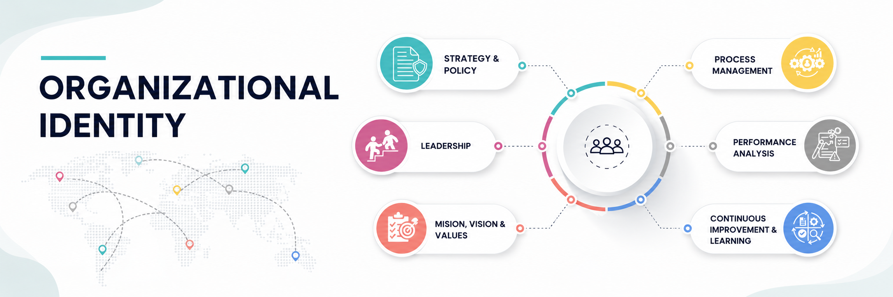
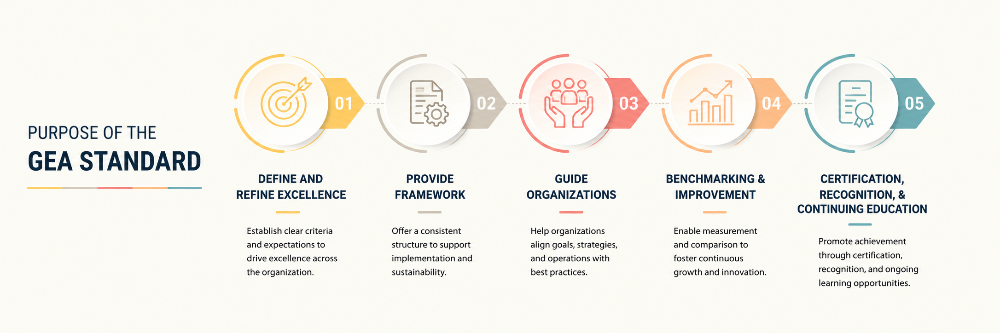
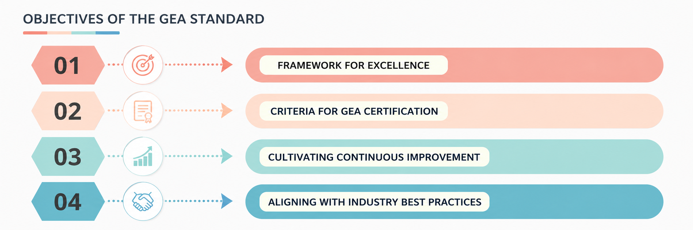
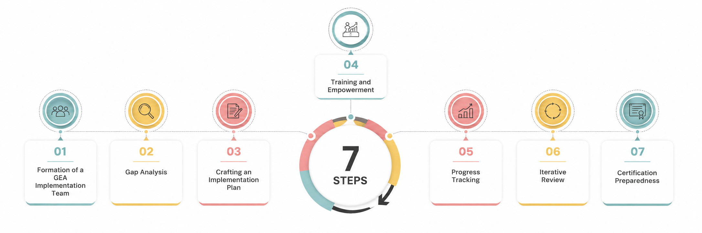
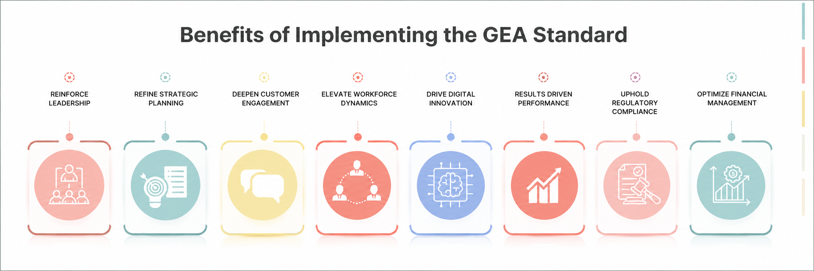
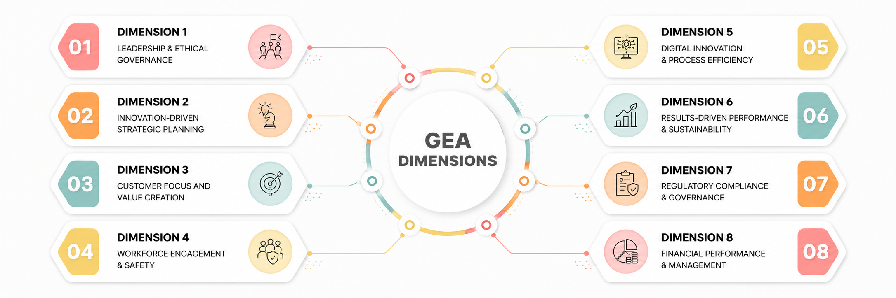
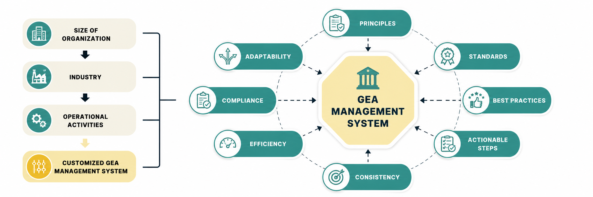
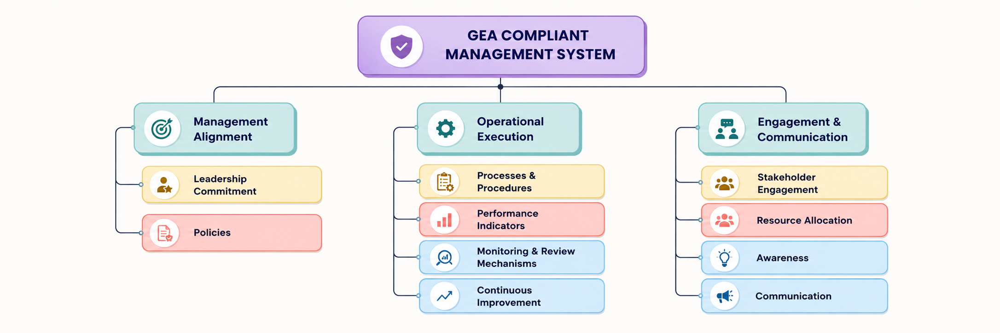
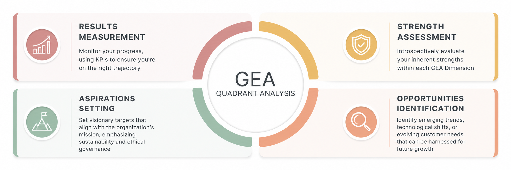
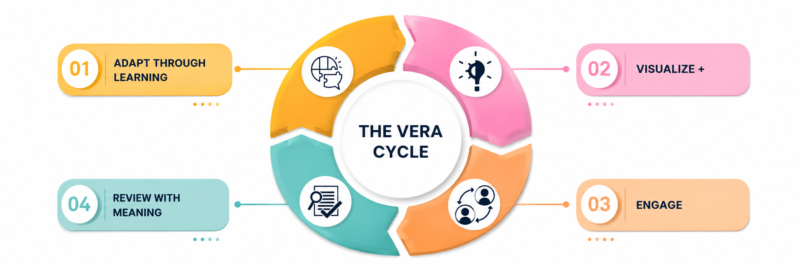

The GEA STANDARD
Foreword
In today's fast-paced and complex environment, the need for a reliable blueprint to guide organizational practices towards peak performance is more critical than ever. The GEA Standard, developed by a dedicated team of experts, integrates extensive research, practical insights, and progressive industry practices. It is designed not just as a tool, but as a partner in your journey towards sustained excellence.
This Standard is crafted to help organizations navigate the ever-evolving challenges and opportunities of the modern business landscape. It provides a comprehensive set of principles and practices that serve as a robust foundation for continuous improvement and strategic success.
We invite you to use the GEA Standard as your compass in the pursuit of excellence. Let it guide your strategies, enhance your operations, and inspire a culture of continuous improvement that drives lasting success.
Introduction
Rooted in a philosophy that intertwines strategy with ethics, innovation with governance, and performance with sustainability, the GEA Standard offers a holistic approach to organizational growth. It is essential to understand that the true power of the GEA Standard lies in its ability to seamlessly integrate these eight dimensions.
This ensures that every aspect of an organization resonates with the principles of excellence. It's not just about achieving benchmarks but about fostering a culture that continually strives for better, that values feedback, and that is resilient in the face of challenges.
By embracing the GEA Standard, organizations are not just adopting a set of guidelines; they are committing to a philosophy of continuous improvement, ethical governance, and stakeholder engagement.
1. Determining the Scope of the GEA Standard
The scope of the GEA Standard outlines the boundaries within which the Standard will be applied. It is crucial to precisely define these parameters, which may include specific organizational segments, functions, or processes. This scope is shaped by the organization’s strategic objectives, expectations of stakeholders, and any applicable regulatory or statutory requirements.
Outlined below are structured steps to assist organizations in defining the scope of the GEA Standard:
- Identify Key Processes and Functions: Identify critical processes and functions that are essential for organizational performance and stakeholder satisfaction, encompassing both primary value-generating processes and supporting processes.
- Consider Organizational Context and Obligations: Tailor the scope to reflect the organization’s characteristics such as size, complexity, culture, and regulatory environment. For example, a multinational may pilot the Standard in selected departments or regions, whereas a startup might implement it across the organization due to its smaller size.
- Align with Strategic Goals and Stakeholder Expectations: Ensure the scope aligns with the organization's strategic goals and meets stakeholder expectations. If enhancing stakeholder satisfaction is prioritized, focus on processes that directly impact their experience.
- Assess Resource Availability: Define the scope based on available resources, including personnel, financial assets, and technological infrastructure.
- Document and Communicate the Scope: Clearly document the defined scope to guide implementation efforts and ensure alignment and consistency across the organization.
- Regularly Review the Scope: Continuously evaluate the scope to adapt to changes in organizational dynamics, stakeholder expectations, and performance relative to the Standard, ensuring it remains relevant and aligned with organizational needs and goals.
1.1. Intended Use of the GEA Standard
The GEA Standard is designed to support organizations in achieving and sustaining unparalleled excellence. It provides a versatile toolkit that adapts to various organizational needs through a structured pathway to continual improvement and commitment to excellence.
- Self-Assessment Tool: The GEA Standard enables organizations to conduct thorough self-assessments, identifying strengths, uncovering improvement areas, and developing strategic action plans for ongoing progress.
- Certification Blueprint: The Standard outlines clear criteria for GEA Certification, offering a pathway for organizations to demonstrate their commitment to excellence and enhance their market credibility.
- Instrument for Continuous Improvement: Emphasizing continuous improvement, the Standard encourages organizations to engage in ongoing evaluation and enhancement of their practices, ensuring perpetual operational excellence.
- Benchmarking Tool: The GEA Standard acts as a benchmarking tool, allowing organizations to compare their performance against industry leaders, fostering a culture of competitive improvement and innovation.
- Operational and Business Excellence: Tailored to enhance both operational and business performance, the GEA Standard serves as a comprehensive guide for organizations aiming to excel in various aspects of their operations.
1.2. Global Applicability and Adaptation
The GEA Standard is designed to be versatile and adaptable, catering to organizations of varying sizes, industries, and regions. Its flexibility ensures alignment with unique organizational needs and contexts.
To enhance its global applicability, organizations should consider the following:
1. Cultural Adaptability: Leadership styles, customer expectations, and employee engagement strategies can differ across cultures. Adapting the GEA Standard's principles to align with specific cultural contexts is essential. This might involve tailoring communication and negotiation styles or leadership approaches to resonate with local cultural norms.
2. Legal and Regulatory Considerations: Different countries have distinct legal and regulatory landscapes. It's imperative that organizations align the GEA Standard's principles with local legal and regulatory mandates, such as adapting data privacy practices and transparent sourcing protocols to meet specific regulations.
3. Economic Context: Economic conditions can influence the GEA Standard's implementation. For instance, organizations in emerging economies might face challenges distinct from those in developed economies. Adapting to factors like digital infrastructure availability, economic stability, and market maturity is crucial. These and many other factors impact a nation’s or region’s economic competitiveness, which in turn impacts organizations’ opportunities.
4. Localization of Practices: While the GEA Standard maintains a global perspective, its application should be localized to meet specific regional needs, conditions, and cultural nuances. This encompasses understanding and catering to local customer needs, employee expectations, and societal norms.
5. Global Benchmarking: The GEA Standard offers a benchmarking framework, allowing organizations to gauge their performance against global counterparts and pinpoint areas for enhancement.
1.3. Overview of the GEA Standard: Eight Dimensions
The GEA Standard is structured around eight key Dimensions that encapsulate the foundational elements of organizational excellence. These Dimensions are designed to serve as the pillars that support and guide organizations on their path to achieving and sustaining excellence. Each Dimension addresses a specific area of focus, ensuring a comprehensive approach to enhancing organizational performance.
The 8 Dimensions of the GEA Standard include:
- Dimension 1: Leadership and Ethical Governance
- Dimension 2: Innovation-Driven Strategic Planning
- Dimension 3: Customer Focus and Value Creation
- Dimension 4: Workforce Engagement and Safety
- Dimension 5: Digital Innovation and Process Efficiency
- Dimension 6: Results-Driven Performance and Sustainability
- Dimension 7: Regulatory Compliance and Governance
- Dimension 8: Financial Performance and Management
2. The GEA Standard and the United Nations Sustainable Development Goals (SDGs)
In our modern, interconnected world, the quest for organizational excellence inherently intertwines with the imperative of global sustainability. Recognizing this profound interconnection, the GEA Standard meticulously incorporates the essence of the United Nations' Sustainable Development Goals (SDGs). These SDGs serve as a guiding blueprint, delineating a path toward a more sustainable and equitable future for all—a mission deeply resonant with the ethos of the GEA Standard.
{kind=link}
At the core of the GEA Standard lies a commitment to extensive promotion and alignment with all 17 SDGs. This recognition underscores their interconnectedness and collective significance in advancing global sustainability. Through the GEA Standard, organizations are urged to seamlessly integrate SDG principles into their strategies, operations, and organizational culture, fostering a comprehensive and inclusive approach to sustainability and social responsibility.
While embracing all SDGs, the GEA Standard is notably tethered to specific goals where organizations can effect profound change and catalyze meaningful impact.
These key alignments spotlight areas where the GEA Standard not only nurtures organizational growth but also contributes significantly to broader global well-being and sustainability:
- Quality Education (SDG 4): The GEA Standard emphasizes the importance of continuous learning and capacity building, ensuring that organizations prioritize education and training for their workforce.
- Decent Work and Economic Growth (SDG 8): By promoting best practices across industries, the GEA Standard supports the creation of decent work opportunities and fosters economic growth.
- Industry, Innovation, and Infrastructure (SDG 9): The adaptability of the GEA Standard to various industries encourages innovation and the development of resilient infrastructure.
- Responsible Consumption and Production (SDG 12): The GEA Standard encourages organizations to adopt sustainable practices, ensuring that resources are used efficiently and responsibly.
- Partnerships for the Goals (SDG 17): The GEA Standard's emphasis on collaboration and partnerships aligns with the global call for multi-stakeholder partnerships to achieve the SDGs.
By integrating the principles of the UN's SDGs, the GEA Standard ensures that organizations are not only pursuing excellence but are also contributing to a more sustainable and inclusive future. This alignment underscores the GEA Standard's commitment to driving both organizational success and global sustainability.
3. Organizational Identity
Organizational identity encapsulates the core elements that define an entity. This identity is dynamic, evolving with the organization's strategic shifts and environmental changes. The GEA Standard recognizes this fluidity, advocating for a balance between steadfast principles and adaptability.
3.1. Foundational Elements
.png){kind=link}

3.1.1. Mission
The mission statement captures the essence of an organization's purpose and direction. It should:
- Clearly articulate the organization's primary purpose.
- Highlight who the organization serves and the value it brings.
- Emphasize ethical governance and responsible business practices.
3.1.2. Vision
Painting a picture of the organization's aspirational future, the vision statement should:
- Depict a future that aligns with the organization's values.
- Be both ambitious and achievable.
- Incorporate sustainability.
3.1.3. Values
Shaping an organization's culture and decision-making, values should:
- Be explicit and understood by all stakeholders.
- Reinforce ethical governance and responsible business practices.
- Guide decision-making processes.
These three foundational elements are embedded into the fabric of the eight Dimensions of the GEA Standard. Mission, vision, and values serve as both the overarching superstructure of the organization, as well as the driving impetus of its purpose.
3.2. Leadership, Strategy, and Performance
3.2.1. Leadership
Serving as the cornerstone of an organization's success and the indispensable prerequisite for achieving excellence, effective leadership should:
- Embody the organization's mission, vision, and values.
- Foster a culture of ethical governance.
- Drive responsible business practices.
3.2.2. Strategy and Policy
Providing the roadmap guiding an organization's journey towards its goals, strategies and policies should:
- Provide a clear strategic direction.
- Emphasize sustainability and adaptability.
- Align with the organization's mission, vision, and values.
3.2.3. Process Management
Ensuring the organization functions efficiently and effectively, process management should:
- Recognize the interconnectedness of organizational processes.
- Prioritize efficiency and quality.
- Embrace continuous improvement.
3.2.4. Performance Analysis
Offering a reflective lens for gauging effectiveness, performance analysis should:
- Use the GEA Standard as a benchmark.
- Base decisions on empirical evidence.
- Continuously monitor and adapt.
3.2.5. Continuous Improvement and Learning
Ensuring an organization remains agile and responsive to change, a commitment to continuous improvement and learning should:
- Always seek areas for improvement.
- Value feedback as a growth tool.
- Learn from both successes and failures.
4. Organizational Context
The GEA Standard is designed with a universal framework but recognizes the necessity of adaptation to the diverse environments in which organizations operate. This section provides detailed guidance for customizing the GEA Standard to align with each organization's specific context, thereby ensuring its applicability while maintaining the integrity of its principles.
4.1. Understanding Your Organizational Context
Effective implementation of the GEA Standard requires a deep understanding of an organization's unique environment. Organizations must conduct a thorough introspection and analysis that encompasses both internal and external factors:
Internal Analysis
- Mission, Vision, and Values Examination: Evaluate how your organization's core principles and long-term objectives align with the GEA Standard. Reflect on these foundational elements to ensure they support and enhance your strategic alignment with the standard.
- Operational Review: Analyze your existing processes, workflows, and internal stakeholder engagement. Understand how these elements can integrate with or need modification to meet the GEA Standard.
- Cultural Alignment: Consider the cultural aspects of your organization, assessing how the inherent values and behaviors can align with or adapt to the principles of the GEA Standard.
External Analysis
- Market Trends and Competitive Landscape: Assess the current market dynamics, industry trends, and competitive pressures. Identify how these factors influence your strategic priorities and how the GEA Standard can be utilized to gain a competitive advantage.
- Regulatory and Legal Compliance: Review applicable regulatory frameworks and legal requirements specific to your industry and geography. Ensure that the GEA Standard’s implementation does not conflict with these obligations and supports compliance.
- Socio-Economic Factors: Evaluate the socio-economic context in which your organization operates. Consider economic conditions, social trends, and environmental factors that could impact the adoption and efficacy of the GEA Standard.
By conducting a comprehensive analysis of both internal and external environments, organizations can tailor the GEA Standard to their specific conditions, ensuring it delivers maximum value and supports sustainable business practices.
4.2. Prioritizing the Dimensions
The GEA Standard's eight dimensions are all integral and coequal. However, based on an organization's context, some might take precedence in terms of emphasis or extent of implementation:
- Startups: Focus on "Innovation-Driven Strategic Planning" and "Digital Innovation and Process Efficiency" to stay agile and competitive in a fast-paced market.
- Manufacturing Companies: Focus on "Workforce Engagement and Safety" to ensure a productive and safe environment, and "Results-Driven Performance and Sustainability" to optimize production and reduce waste.
- Government Agencies: Prioritize "Leadership and Ethical Governance" to maintain public trust and "Regulatory Compliance and Governance" to ensure adherence to public mandates.
- Healthcare Providers: "Customer Focus and Value Creation" is paramount to cater to patients' needs, and "Workforce Engagement and Safety" ensures the well-being of both patients and healthcare professionals.
- Educational Institutions: "Leadership and Ethical Governance" is crucial to set the right tone for educational excellence, and "Customer Focus and Value Creation" to cater to students' expectations.
- Financial Institutions: "Regulatory Compliance and Governance" is essential given the regulatory landscape, and "Financial Performance and Management" ensures financial stability and growth.
- Nonprofit Organizations: “Results-Driven Performance and Sustainability” creates balance between humanitarian ideals and operational performance, and “Financial Performance and Management” is central to donor stakeholder interests.
- Public-Private Partnerships: Emphasize “Innovation-Driven Strategic Planning” and “Digital Innovation and Process Efficiency” to enact cutting edge best practices expected of private enterprise, which in turn reinforces the public trust.
This strategic prioritization should align with the organization's key performance indicators (KPIs) and long-term objectives, ensuring a holistic approach to excellence, compliance, and beneficence.
4.3. Adapting the Standards
The GEA Standard champions adaptability, ensuring its principles are applicable across diverse organizational landscapes. While its core tenets are immutable, their application is designed to be customizable, accommodating the specific needs and unique contexts of different organizations.
Tailoring Applications Across Different Contexts
The GEA Standard facilitates flexibility in its application, accommodating the diverse operational needs of various industries. The following examples illustrate potential adaptations of the Standard's principles to align with specific organizational contexts and requirements:
- Leadership and Ethical Governance: Globally operating corporations may prioritize international ethical standards and cross-cultural leadership training. Conversely, local enterprises might focus on community-centric ethical practices and leadership initiatives, each tailored to their respective operational environments to uphold high standards of ethical governance.
- Innovation-Driven Strategic Planning: Technology startups may implement rapid innovation cycles using agile methodologies, whereas established manufacturing firms might focus on incremental innovation that aligns with long-term strategic planning. Each strategy is specifically tailored to meet the demands of the respective industry and stage of organizational lifecycle.
- Digital Innovation and Process Efficiency: Multinational corporations might invest in advanced technologies such as artificial intelligence and machine learning to optimize operations. In contrast, non-profits may utilize cost-effective cloud technologies to enhance operational efficiency and expand their outreach efforts.
- Customer Focus and Value Creation: E-commerce platforms might utilize data analytics to personalize customer experiences. On the other hand, local artisan shops could focus on direct customer interactions and unique product offerings to enhance customer value.
- Workforce Engagement and Safety: The industry context dictates the focus, ranging from on-site safety training in the construction industry to ergonomic and mental well-being programs in technology firms.
- Results-Driven Performance and Sustainability: Environmental non-governmental organizations (NGOs) may measure success through conservation efforts and community impact, while retail chains might focus on sales efficiency and sustainable supply chain practices.
- Regulatory Compliance and Governance: Industries like pharmaceuticals require stringent regulatory compliance measures, whereas digital marketing firms may focus more on data protection and compliance with advertising standards.
- Financial Performance and Management: Publicly traded companies may emphasize shareholder value and quarterly financial reporting, whereas family-owned businesses might focus on long-term financial stability and legacy planning.
Adaptations for Specific Scenarios
The versatility of the GEA Standard also extends to specific organizational situations and crises:
- Mergers and Acquisitions: Tailoring "Leadership and Ethical Governance" to blend diverse organizational cultures and adjusting "Workforce Engagement and Safety" to integrate different employee groups smoothly.
- Liability Crises: For events like product recalls or data breaches, adjusting "Customer Focus and Value Creation" to mitigate customer impact, and "Regulatory Compliance and Governance" to address legal and reputational repercussions.
- Organizational Turnarounds: Leveraging "Digital Innovation and Process Efficiency" for cost-effective operations during restructuring and enhancing "Financial Performance and Management" for stringent financial oversight.
- Supply Chain Disruptions: Modifying "Innovation-Driven Strategic Planning" to adapt sourcing strategies and re-evaluating "Results-Driven Performance and Sustainability" to mitigate new environmental and social effects.
These adaptations ensure that organizations can fully integrate the GEA Standard into their strategic frameworks, making it a dynamic tool that promotes not only compliance but also significant organizational advancement across various sectors and circumstances.
4.4. Implementing the Standards
Mere adoption of the GEA Standards isn't enough. They should be ingrained into the organization's ethos:
- Strategic Alignment: Integrate the GEA Standards with organizational objectives. They should guide, not dictate, the journey towards those objectives.
- Operational Integration: Embed the standards in daily activities. This ensures consistency and reinforces their importance.
- Resource Planning: Allocate necessary resources. Whether it's personnel, technology, or finances, effective implementation requires investment.
- Change Management: Embrace the change the standards bring. Communicate their benefits, provide training, and address resistance proactively.
- Continuous Improvement: The journey with the GEA Standards is ongoing. Regularly review and refine your approach, ensuring alignment with both the standards and organizational goals.
By adhering to these guidelines, organizations can seamlessly integrate the GEA Standards, paving the way for operational excellence and sustainable growth.
4.5. Evaluating and Improving Your Performance
After integrating the GEA Standards into your organizational processes, it becomes imperative to institute a robust mechanism for periodic performance assessment and iterative refinement. Here's a structured approach to ensure you're on the right track:
- Self-Assessment: Regularly engage in introspective evaluations to discern organizational strengths and pinpoint areas that warrant enhancement. This self-reflective process aids in maintaining alignment with the GEA Standards and ensures that you're capitalizing on your strengths.
- External Validation: Solicite third-party assessments. An external perspective can offer invaluable insights, validating your internal assessments and highlighting potential blind spots.
- Performance Metrics: Implement key performance indicators (KPIs) that align with your strategic goals. These metrics serve as tangible markers of your progress, allowing for quantifiable tracking and assessment.
4.5.1. GEA Tools for Guidance
The GEA Standard equips organizations with a repertoire of analytical tools designed to facilitate comprehensive evaluations. Notably:
- The GEA Quadrant Analysis: A strategic tool to holistically assess organizational performance across various dimensions.
- The VERA Cycle: A cyclic approach to ensure continuous validation, evaluation, refinement, and adaptation.
- The Hybrid Self-Assessment Tool: A blended approach that combines qualitative and quantitative methods for a thorough performance review.
Leverage these tools to gauge your performance, interpret the outcomes, and inform your decision-making process. Rooting your evaluations in data ensures that your improvement initiatives are both targeted and impactful, fostering a culture of perpetual enhancement and alignment with the GEA Standards.
5. Purpose of the GEA Standard
The GEA Standard serves as a holistic guide for organizations striving for unparalleled operational and performance excellence. It charts a methodical route to enhancement, focusing on vital areas crucial for sustained success in a rapidly evolving business landscape.
.png){kind=link}

5.1. Objectives of the GEA Standard
{kind=link}

The GEA Standard's core objectives encompass:
- Framework for Excellence: Offer a structure encapsulating eight pivotal dimensions, each characterized by criteria essential for GEA Certification.
- Criteria for GEA Certification: Set forth clear criteria grounded in the eight dimensions, symbolizing an organization's commitment to operational excellence.
- Cultivating Continuous Improvement: Instill a culture emphasizing perpetual enhancement and learning.
- Alignment with Industry Best Practices: Ensure organizations resonate with their industry's best practices, bolstering their competitive edge.
5.1.1. Steps for Achieving These Objectives
{kind=link}

- Formation of a GEA Implementation Team: Assemble a dedicated team comprised of key stakeholders and experts to spearhead the GEA Standard's implementation. This team will be responsible for overseeing the entire process, ensuring alignment with organizational goals, and facilitating collaboration across departments. Importantly, the team should include members of the organization’s top level senior leadership, to ensure that the foundational elements of mission, vision, and values are embedded into the GEA implementation effort from the ground up. Top leadership representation on the team also ensures that the GEA implementation will be governance-driven and governance-centered.
- Gap Analysis: Conduct a comprehensive analysis to pinpoint areas of divergence from the GEA Standard. This involves assessing current practices, identifying discrepancies or deficiencies, and understanding the underlying causes. The findings will guide the development of targeted strategies and solutions to bridge the gaps.
- Crafting an Implementation Plan: Devise a detailed plan that outlines specific actions, timelines, roles, and responsibilities. This plan serves as a roadmap, providing clear direction and ensuring that all team members understand their individual contributions to achieving alignment with the GEA Standard. In larger complex organizations, this extends to departmental, divisional, and regional contributions as determined by organizational context.
- Training and Empowerment: Develop and deliver tailored training and education programs to equip employees and management with the necessary knowledge, skills, and tools to effectively implement the GEA Standard. Importantly, implementation of the GEA Standard is an organization-wide total effort, where every individual has a contributing part to play. Training and education will aim for the empowerment and encouragement of all people throughout the organization to perform their job roles to a maximum standard of personal excellence. Equally important is the ceaseless commitment to continuing education.
- Progress Tracking: Implement regular monitoring mechanisms to gauge the implementation's progress. This includes establishing key performance indicators (KPIs), conducting periodic reviews, and utilizing holistic data-driven insights, both quantitative and qualitative, to assess adherence to the plan and identify areas for improvement. It is imperative for members of top level leadership to be engaged in progress tracking.
- Iterative Review: Adopt a continuous improvement approach by regularly assessing performance and aligning with the evolving GEA Standard. This involves ongoing evaluation, feedback collection, and iterative adjustments to strategies and tactics to ensure sustained alignment and effectiveness. This is also entwined with continuous training and education. It is imperative for members of top level leadership to engage in the iterative review process.
- Certification Preparedness: Engage in a systematic preparation process for the GEA Certification. This includes conducting internal assessments, seeking external consultations, and undertaking necessary actions to demonstrate compliance with the GEA Standard. Importantly, as with the pursuit of excellence in general, GEA certification is a broad-based organization-wide effort, not merely a narrow pursuit of technical compliance based on checklists of requirements. GEA certification should be holistically grounded in foundational elements, strong leadership, and ethical governance, which all serve to foster and reinforce a total culture of commitment to excellence and continuous improvement.
6. Benefits of Implementing the GEA Standard
By adopting the GEA Standard, organizations not only enhance their internal processes but also gain a competitive edge in the broader industry landscape. Here's a deeper dive into the benefits:
.png){kind=link}

- Reinforce Leadership: Implementing the GEA Standard strengthens leadership capabilities, ensuring that leaders are equipped with the skills and knowledge to guide their teams effectively and ethically. This results in a more visionary and proactive leadership approach that can navigate challenges and seize opportunities in the course of executing the organizational mission and enacting its values.
- Refine Strategic Planning: The GEA Standard provides tools and methodologies to sharpen strategic planning processes. Organizations can set clearer objectives, identify potential risks on the horizon, and devise actionable plans to achieve their goals while gaining innovative insights on emerging industry trends and future market opportunities.
- Deepen Customer Engagement: With a focus on customer-centricity, the GEA Standard helps organizations understand and cater to their customers' needs better and more completely, leading to improved customer satisfaction and loyalty. Synergistically, enhanced customer engagement further improves the organization’s public stakeholder relations and brand reputation.
- Elevate Workforce Dynamics: By emphasizing employee engagement, empowerment, and well-being, the GEA Standard ensures that the workforce remains motivated, productive, and aligned with the organization's goals. This includes continuous employee development to maintain the most updated and relevant workforce skills. Synergistically, the organization’s enhanced workplace reputation contributes to improved employee recruiting and retention.
- Drive Digital Innovation: In today's digital age, staying ahead of technological advancements is crucial. The GEA Standard encourages organizations to embrace digital transformation, leading to synergistic gains in efficiency and capability, streamlined operations and business processes, and enhanced customer experiences and stakeholder engagement.
- Champion Results-Driven Performance: The GEA Standard promotes a results-oriented approach, ensuring that organizations measure their performance against set benchmarks and continuously strive for improvement. Simultaneously, the Standard guides organizations to calibrate their performance within the broader context of global sustainability, unlocking win-win synergies between organizational results and societal benefits.
- Uphold Regulatory Compliance: With a clear emphasis on compliance and governance, the GEA Standard helps organizations ensure that they meet all regulatory requirements in all jurisdictions, minimizing risks and potential legal challenges as well as reputational liabilities. Simultaneously, the Standard facilitates integrated compliance with existing international and industry-specific excellence frameworks, synergistically incorporating their performance benefits combined with their regulatory protections.
- Optimize Financial Management: Financial performance is crucial for attaining and investing in sustained organizational growth and longevity. The GEA Standard provides guidelines for effective financial management, ensuring continuous orientation towards performance and profitability, financial risk mitigation, and long-term financial stability.
The aforementioned major benefits of implementing the GEA Standard correlate very closely to the Eight Dimensions of the Standard, which are explored in detail in Section 8.
6.1. Expected Outcomes
The decision to embrace the GEA Standard is a commitment to excellence. Organizations that adopt this Standard can anticipate several positive outcomes:
- Elevated Organizational Performance: By focusing on multiple dimensions of operations and strategy, organizations can expect a holistic improvement in their total performance, leading to better results in numerous areas and increased stakeholder satisfaction internally and externally.
- GEA Certification: Achieving GEA certification is a testament to an organization's dedication to total and sustained excellence. This certification not only amplifies organizational credibility but also provides a competitive advantage in the industry. Importantly, the GEA Standard itself continues to evolve and improve over time, creating lifetime organizational value and unlocking deep long term synergies for achieving and maintaining GEA certification.
- Culture of Continuous Improvement: The GEA Standard instills a culture where continuous improvement becomes second nature. Organizations become more agile and resilient, adapting to changes and challenges and constantly seeking ways to better themselves.
- Alignment with Industry Best Practices: By adhering to the GEA Standard, organizations ensure that their operations and strategies resonate with the best practices in the industry, ensuring they remain relevant and competitive. Simultaneously, adhering to the Standard differentiates organizations from the competition by signaling their singular dedication to excellence in all areas of strategy, operations, customer engagement, and workforce elevation.
By aligning with the GEA Standard's objectives, organizations set themselves on a trajectory towards holistic growth, operational excellence, and industry leadership, which in turn all synergistically benefit communities and society at large.
7. Systems Thinking in the GEA Standard
Systems Thinking forms the backbone of the GEA Standard, ensuring a comprehensive approach to organizational excellence. This methodology draws from systems theory, systems science, and systems engineering, creating a cohesive framework that views organizations as complex, interrelated systems. This approach not only helps in understanding the organizational dynamics but also in crafting robust solutions that address multifaceted challenges effectively.
7.1. Understanding Systems Thinking
- Systems Theory: Views organizations as cohesive entities interacting dynamically with their environments, composed of interconnected subsystems. This perspective helps in understanding how changes within one part of a system affect the whole.
- Systems Science: Aids in modeling and analyzing organizational behaviors and structures to predict outcomes and optimize performance.
- Systems Engineering: Focuses on designing and optimizing operational processes to improve efficiency and effectiveness.
By integrating these disciplines, Systems Thinking offers a holistic approach that extends beyond traditional management and organizational theories, incorporating aspects of econometrics, behavioral sciences, and more. It emphasizes the importance of human factors in organizational performance and problem-solving.
At its core, Systems Thinking is pivotal for effective change management—vital for organizations aiming to achieve and sustain excellence. The GEA Standard leverages this approach to foster a culture of continuous improvement, where organizations are encouraged to engage in an ongoing cycle of evaluation, development, implementation, and learning.
7.2. Characteristics of the GEA System: Flexibility, Adaptability, Granularity, Modularity, and Scalability
The application of Systems Thinking within the GEA Standard is characterized by five key attributes:
Flexibility: The GEA Standard ensures flexibility in application without compromising the underlying structural integrity, allowing for customized implementations that meet specific organizational needs.
Adaptability: Designed to be universally adaptable, the GEA Standard can be seamlessly integrated into various organizational contexts.
Granularity: The Standard provides the capability for detailed implementation at varying levels of granularity, enabling organizations to apply specific aspects of the Standard according to their unique operational requirements.
Modularity: Its modular design allows organizations to adopt and implement sections of the Standard selectively, based on priority areas, thereby facilitating effective integration and synergistic functioning of its components.
Scalability: Crafted to suit organizations of any size and at any stage of development, the GEA Standard supports scalable application, ensuring it remains effective as organizations evolve and grow.
8. The GEA Dimensions
{kind=link}

The eight dimensions of the GEA Standard are intricately interwoven and interdependent, forming a cohesive whole intended for holistic implementation. Together, these dimensions create a comprehensive framework that fosters synergy, encouraging organizations to embrace a unified approach towards achieving overall business excellence.
Each dimension is systematically presented, encompassing principles, standards, best practices, actionable steps, and performance indicators. It's important to note that while the best practices, actionable steps, and performance indicators provided for each dimension serve as a robust foundation, they are not exhaustive. Organizations are encouraged to continually refine and develop their own practices, protocols, and metrics in alignment with their specific missions and objectives.
8.1. Dimension 1: Leadership and Ethical Governance
Principle
Effective leadership and ethical governance form the cornerstone of business excellence. Leaders set the organization's direction, create a future vision, establish ethical standards, and drive cultural change. They are crucial for ensuring the organization adheres to its core values, emphasizing sustainability and responsible business practices.
Standards
To ensure effective leadership and uphold ethical behavior, organizations must adhere to the following standards:
a) Vision, Mission, and Values: Organizations shall clearly define and document their vision, mission, and values. These must align with ethical principles and guide all strategic and operational decisions.
b) Ethical Behavior and Integrity: Leaders shall demonstrate unwavering commitment to ethical behavior and integrity. This includes maintaining high standards of professionalism and ethics in all business dealings and interactions.
c) Code of Ethics: Organizations shall develop, implement, and uphold a comprehensive code of ethics that sets forth clear standards of conduct expected of all employees and management.
d) Governance Processes: Robust governance processes, policies, and mechanisms for ethical oversight shall be established. This includes procedures for reporting ethical violations and systems to prevent, detect, and address such issues.
e) Accountability, Transparency, and Fairness: Organizations shall foster a culture of accountability and transparency in decision-making processes. All employees and management must be held accountable for their actions, and all operations should be conducted fairly and transparently.
f) Diversity and Inclusion: Leadership shall actively promote and implement policies that ensure diversity and inclusion within the workplace. This includes equal opportunities for all employees and a commitment to creating an inclusive work environment.
Best Practices
The following best practices provide guidance for embodying the principles of Leadership and Ethical Governance effectively:
- Establish a clearly articulated mission and set of values that guide all business decisions.
- Foster a culture of integrity and ethical behavior throughout the organization by leading by example.
- Develop a robust code of ethics and ensure comprehensive understanding and adherence throughout the organization.
- Implement transparent and accessible ethical governance processes, policies, and controls.
- Promote and operationalize diversity and inclusion within all levels of the organization.
Actionable Steps
Organizations can implement these best practices by taking the following actionable steps:
- Schedule annual leadership retreats to review and reinforce the organization's vision, mission, and values.
- Organize quarterly ethical behavior workshops for all employees to reinforce ethical standards and address new ethical dilemmas.
- Annually review and update the code of ethics; conduct organization-wide training sessions to ensure understanding and compliance.
- Set up an anonymous hotline or online platform for reporting ethical concerns, backed by explicit whistleblower protection policies.
- Regularly publish reports on social impact and progress towards socially related goals to enhance transparency and accountability.
- Launch and regularly evaluate a diversity, equity, and inclusion (DEI) program, with specific initiatives and targets that align with organizational values and adapt to local social and cultural norms.
Key Performance Indicators
Organizations can use the following indicators to monitor their progress and effectiveness in implementing these standards:
- Percentage of employees who have received leadership and ethics training.
- Number of reported ethical concerns and their resolution status.
- Frequency and outcomes of governance audits, both internal and external.
- Diversity metrics, formulated to reflect social and cultural attunement.
- Compliance rate with the organization's code of ethics, measured through incidents and adherence rates.
- Feedback on leadership effectiveness and fairness from employee surveys.
8.2. Dimension 2: Innovation-Driven Strategic Planning
Principle
Innovation-driven strategic planning is fundamental to maintaining competitiveness in a rapidly changing business environment. This dimension underscores the necessity of embedding innovation within the strategic planning process, emphasizing a proactive approach to future challenges and aligning with long-term sustainability goals.
Standards
Organizations shall adhere to the following standards to foster an innovative and strategic approach:
a) Strategic Planning Process: Organizations shall maintain a structured and systematic process for strategic planning that integrates innovation as a core element. This process must include setting strategic goals, developing action plans, and regular reviews to ensure relevance and effectiveness.
b) Strategic Goals and Objectives: Strategic goals and objectives shall be clear, measurable, achievable, and aligned with the organization's vision and mission. They must consider emerging trends, customer needs, market dynamics, and ethical considerations.
c) Culture of Creativity and Continuous Learning: Organizations shall cultivate an environment that encourages creativity, curiosity, and continuous learning. This includes supporting innovative thinking and problem-solving aligned with ethical standards.
d) Resource Allocation for Innovation: Adequate resources, including finances, materials, personnel, and time, shall be allocated specifically for research and development (R&D) and innovation projects, emphasizing sustainability and ethical considerations.
e) Idea Generation and Implementation: Organizations shall establish and maintain systems for the generation, evaluation, selection, and implementation of innovative ideas. Processes must be in place to test, refine, and scale successful innovations.
f) Review and Assessment of the Strategic Plan: Organizations shall regularly review and assess strategic plans to ensure they remain relevant and responsive to changing conditions and align with sustainability goals. Reviews should involve stakeholder input and be transparent.
Best Practices
The following best practices are recommended to enhance the implementation of innovation-driven strategic planning:
- Develop a strategic planning process that is iterative and incorporates ethical and sustainable considerations.
- Ensure strategic goals are forward-looking and reflective of both current and future market conditions and societal expectations.
- Foster an organizational culture that values creativity, risk-taking, and continuous learning.
- Prioritize and secure dedicated resources for R&D and innovation, focusing on long-term benefits.
- Implement robust mechanisms for idea management that align with ethical governance and sustainability.
- Conduct regular and thorough reviews of the strategic plan, adjusting strategies to meet changing external and internal demands.
Actionable Steps
Organizations can operationalize these best practices through the following actionable steps:
- Organize workshops to integrate innovation, ethics, and sustainability into the strategic planning process.
- Set and periodically review strategic objectives in team meetings, incorporating considerations of ethical governance and sustainability.
- Launch initiatives like "Innovation Challenges" to promote creativity and problem-solving within teams.
- Allocate a specific portion of the budget annually to support innovation and sustainability projects.
- Utilize an idea management system to streamline the innovation process and align it with strategic goals.
- Schedule regular review sessions to assess the alignment and effectiveness of the strategic plan, making necessary adjustments to stay on target.
Key Performance Indicators
To evaluate the effectiveness of innovation-driven strategic planning, organizations may track the following KPIs:
- Number of new or improved products, services, or processes developed each year.
- Alignment of strategic goals with innovation and sustainability initiatives.
- Success rate and impact of innovation projects, considering ethical and sustainable practices.
- Engagement levels of employees in innovation processes, including participation rates and diversity of ideas submitted.
- Employee feedback on the organizational culture of innovation, measured through surveys.
- Return on investment from R&D and innovation initiatives, analyzed over different time frames.
8.3. Dimension 3: Customer Focus and Value Creation
Principle
Customer focus and value creation are pivotal to the GEA Standard, reflecting the organization's commitment to meet and exceed customer expectations through ethical governance and sustainable practices. This principle underscores the importance of deeply understanding customer needs and fostering a culture that prioritizes customer satisfaction while aligning with broader organizational goals.
Standards
Organizations shall adhere to the following standards to ensure they consistently meet and exceed customer expectations in an ethical and sustainable manner:
a) Understanding Customer Needs: Organizations shall continuously gather and update their understanding of customer needs, expectations, and preferences through direct engagement, feedback mechanisms, and market research. This understanding must inform all strategic and operational decisions.
b) Customer Feedback Mechanisms: Organizations shall establish and maintain effective mechanisms to collect, analyze, and act on customer feedback, ensuring these processes align with ethical and sustainable practices.
c) Value Creation: Organizations shall develop and deliver products or services that provide exceptional value, meeting or surpassing customer expectations, while adhering to sustainability goals.
d) Customer Relationship Management: Organizations shall implement processes to manage customer relationships effectively, ensuring these processes foster trust, loyalty, and mutual value in alignment with ethical considerations.
e) Customer Satisfaction Measurement: Organizations shall systematically measure and monitor customer satisfaction, employing both quantitative and qualitative methods to proactively address any issues or gaps.
f) Innovation and Improvement Based on Customer Feedback: Organizations shall utilize customer feedback and market insights to drive innovation and continuous improvement, focusing on enhancements that align with ethical governance and sustainability.
Best Practices
The following best practices provide guidance for implementing effective customer focus and value creation:
- Deepen customer understanding through continuous engagement and feedback, integrating ethical and sustainable considerations.
- Develop comprehensive customer feedback systems that reflect the organization's commitment to ethical practices.
- Design and deliver unique value propositions that resonate with customer needs and sustainability objectives.
- Establish robust customer relationship management systems that emphasize ethical interactions and mutual value.
- Regularly review and enhance customer satisfaction measurement tools to ensure they capture the full scope of customer experience.
- Leverage customer feedback to inform ongoing innovation and improvement efforts, ensuring alignment with organizational values and sustainability.
Actionable Steps
To operationalize these best practices, organizations can undertake the following actionable steps:
- Conduct regular customer surveys and focus groups to gain insights into their needs, expectations, and perceptions.
- Implement an ethical and transparent customer feedback system, such as online platforms or feedback forms, that captures comprehensive customer experiences.
- Develop and communicate a clear value proposition that aligns with ethical standards and sustainability, ensuring it is understood and appreciated by customers.
- Create a dedicated team or department responsible for customer relationship management, focusing on ethical interactions and long-term loyalty.
- Utilize established metrics such as Net Promoter Score (NPS), Customer Satisfaction (CSAT), or Customer Effort Score (CES) to measure and improve customer satisfaction.
- Host innovation workshops that use customer feedback as a basis for developing new ideas and improvements.
Key Performance Indicators
Organizations can measure their effectiveness in customer focus and value creation using the following KPIs:
- Customer satisfaction and experience scores, adjusted for ethical and sustainability considerations.
- The effectiveness of customer feedback mechanisms, including diversity of channels and responsiveness.
- Customer retention rates, repeat business statistics, and other metrics demonstrating the success of value propositions.
- The number of improvements or innovations implemented based on customer feedback, highlighting ethical and sustainable practices.
- Outcomes from customer surveys regarding their perception of value, satisfaction, and the organization's ethical alignment.
- New product or service development metrics driven by customer insights.
8.4. Dimension 4: Workforce Engagement and Safety
Principle
Workforce engagement and safety are critical to achieving business excellence and are fundamental to ethical governance and organizational sustainability. Engaged employees exhibit higher productivity and performance, which enhances customer service and employee retention. Similarly, a safe work environment protects employees and contributes to reduced absenteeism and turnover, boosting morale and productivity.
Standards
Organizations shall adhere to the following standards to ensure they promote a work environment that fosters employee engagement and guarantees their safety:
a) Open Communication and Collaboration: Organizations shall foster a culture of open communication and collaboration, creating an environment where employees can freely share ideas and feedback. Collaboration must be encouraged, rewarded, and aligned with sustainability objectives.
b) Employee Engagement Mechanisms: Organizations shall implement mechanisms for employee engagement, such as feedback channels, recognition programs, and decision-making involvement opportunities.
c) Occupational Health and Safety (OHS) Policies: Organizations must prioritize employee health and safety by establishing comprehensive OHS policies, procedures, and training aligned with sustainability goals. This includes maintaining a safe and healthy work environment and complying with relevant health and safety regulations.
d) Professional Development Opportunities: Organizations shall provide employees with professional development opportunities, including training and career advancement pathways, to support their professional growth in alignment with organizational goals.
e) Diversity, Equity, and Inclusion (DEI): Organizations shall commit to fostering diversity, equity, and inclusion, ensuring equal opportunities and fair treatment for all employees. This commitment must permeate all HR practices and contribute to creating an inclusive workplace culture.
f) Work-Life Balance and Employee Well-Being: Organizations shall support work-life balance and holistic employee well-being through initiatives such as flexible work arrangements and wellness programs.
Best Practices
To enhance workforce engagement and safety, organizations are encouraged to adopt the following best practices:
- Encourage and facilitate open communication and collaborative work environments that reflect the organization's ethical standards.
- Develop and maintain robust employee engagement mechanisms that foster a sense of belonging and contribution.
- Continuously prioritize and improve health and safety standards to protect employees and align with sustainable practices.
- Offer continuous professional development opportunities that align with employees' career goals and organizational objectives.
- Actively promote diversity, equity, and inclusion to enhance organizational culture and employee satisfaction.
- Support employees' work-life balance and overall well-being through comprehensive programs and policies.
Actionable Steps
Organizations can implement these best practices through the following actionable steps:
- Deploy communication tools and platforms that support transparent and open interactions across all levels of the organization.
- Establish a recognition and rewards program that acknowledges and incentivizes employee contributions and achievements.
- Conduct regular safety audits and trainings to ensure compliance with health and safety standards.
- Create clear pathways for career advancement and provide regular training sessions to help employees develop necessary skills.
- Implement targeted recruitment and retention strategies to improve diversity and representation within the workforce.
- Offer flexible working arrangements and develop wellness programs that address physical, mental, and emotional health needs.
Key Performance Indicators
To measure the effectiveness of initiatives aimed at improving workforce engagement and safety, organizations may track the following KPIs:
- Employee engagement and satisfaction rates, measured through regular surveys and feedback mechanisms.
- Incidence and frequency of workplace accidents and safety violations.
- Participation rates in professional development programs and the impact on career advancement.
- Diversity metrics and effectiveness of DEI initiatives.
- Employee turnover and retention rates, particularly as they relate to engagement and satisfaction.
- Utilization and effectiveness of wellness programs and their impact on employee well-being.
8.5. Dimension 5: Digital Innovation and Process Efficiency
Principle
Digital Innovation and Process Efficiency are essential for modern business excellence, incorporating digital technology fundamentally into all areas of a business to change how value is delivered to customers, while aligning with ethical governance and sustainability goals.
Standards
Organizations shall adhere to the following standards to effectively integrate digital technology and streamline operations:
a) Digital Innovation Strategy: Organizations shall develop a comprehensive digital innovation strategy that aligns with their overall business objectives and ethical governance. This strategy must identify opportunities for digital transformation, select appropriate technologies, and manage the changes associated with digital integration.
b) Process Efficiency and Quality Control: Organizations shall establish processes to enhance operational efficiency and implement quality control measures that reflect sustainability goals. This includes setting and monitoring performance standards and continuously improving operational processes.
c) Risk Management in Digital Innovation: Organizations shall maintain a robust risk management process to identify, assess, and mitigate risks associated with digital innovation. This includes conducting regular risk assessments and implementing appropriate risk mitigation strategies.
d) Digital Literacy and Training: Organizations shall promote digital literacy among employees through training and education programs that address the practical use and ethical implications of digital technologies.
e) Technological Adaptability and Innovation: Organizations shall foster technological adaptability and innovation to enhance operational efficiency and competitiveness. This includes staying informed about technological advancements and adopting innovative technologies that are aligned with sustainability.
f) Continuous Monitoring and Improvement: Organizations must continuously monitor and improve operational processes to optimize effectiveness and efficiency. This includes regular reviews and analyses of operational performance to identify and implement improvement opportunities.
Best Practices
To enhance digital innovation and process efficiency, organizations are encouraged to adopt the following best practices:
- Develop and regularly update a digital innovation strategy that integrates ethics and sustainability.
- Enhance operational efficiency and quality control through continuous process improvement and integration of new technologies.
- Implement comprehensive risk management practices to proactively address the challenges and risks of digital innovation.
- Promote ongoing digital literacy and training to ensure all employees can effectively utilize new technologies.
- Encourage technological adaptability and foster a culture of innovation that prioritizes ethical and sustainable practices.
- Regularly monitor and optimize operational processes using advanced digital tools to ensure continual improvement.
Actionable Steps
Organizations can implement these best practices through the following actionable steps:
- Conduct strategic planning sessions focused on developing and refining the digital innovation strategy with an emphasis on ethical governance.
- Utilize digital technologies to automate routine tasks, optimize processes, and integrate quality assurance measures, focusing on sustainability.
- Perform regular risk assessments to identify and address potential risks associated with digital innovation, ensuring alignment with ethical standards.
- Offer ongoing digital literacy workshops and resources for continuous learning, focusing on the ethical use of technology.
- Stay updated on technological advancements and selectively adopt technologies that enhance operational efficiency and sustainability.
- Implement performance metrics to regularly monitor and improve the efficiency of processes through digital innovations.
Key Performance Indicators
To measure the effectiveness of digital innovation and process efficiency initiatives, organizations may track the following KPIs:
- Number and impact of digital transformation initiatives, aligned with ethical governance.
- Efficiency metrics such as cost reductions, time savings, and improvements in quality control, reflecting sustainability.
- Number of employees participating in digital training programs, with a focus on understanding ethical implications.
- Rates of technology adoption and utilization across the organization.
- Employee feedback on digital innovation initiatives and their impact on workplace efficiency and ethics.
- Percentage of business processes optimized through digital technologies, demonstrating ongoing improvement and sustainability.
8.6. Dimension 6: Results-Driven Performance and Sustainability
Principle
Results-Driven Performance and Sustainability are central to the GEA Standard, reflecting the organization's commitment to achieving strategic objectives while promoting sustainability and ethical governance. This principle emphasizes the importance of integrating sustainable practices into all aspects of operations, which positively impacts communities and society.
Standards
Organizations shall adhere to the following standards to ensure their operations not only meet strategic objectives but also advance sustainability:
a) Performance Goals: Organizations shall establish and document clear, measurable, and achievable performance goals that align with strategic objectives and sustainability commitments.
b) Performance Measurement and Monitoring: Organizations shall implement robust systems to measure and monitor performance, integrating sustainability metrics to assess operational effectiveness against set goals.
c) Sustainability Practices: Organizations must prioritize sustainability in all decision-making processes and operations, reflecting the interconnectedness of these practices with overall business success.
d) Continuous Improvement: Organizations shall continuously use performance data to identify areas for improvement, enhancing processes, products, and services in alignment with sustainability goals.
e) Stakeholder Engagement: Organizations shall actively engage with both internal and external stakeholders to align on and inform strategies and decisions related to performance and sustainability.
f) Long-Term Sustainability Planning: Organizations must develop and maintain a comprehensive sustainability plan that addresses long-term goals and strategies, ensuring regular updates to remain relevant and effective amid changing ecological and socioeconomic conditions.
Best Practices
To enhance results-driven performance and sustainability, organizations are encouraged to adopt the following best practices:
- Clearly define performance goals that are aligned with both strategic objectives and sustainability.
- Develop and maintain sophisticated performance monitoring systems that include sustainability indicators.
- Integrate sustainability deeply into organizational culture and operations, ensuring all decision-making processes reflect these values.
- Leverage performance data to drive ongoing process improvements, focusing on enhancing sustainability outcomes.
- Foster strong relationships with stakeholders to gain insights into their expectations and feedback on organizational performance and sustainability practices.
- Regularly communicate performance and sustainability results to stakeholders, maintaining transparency and accountability.
Actionable Steps
Organizations can operationalize these best practices through the following actionable steps:
- Conduct strategic planning sessions to set and document performance goals that incorporate sustainability and ethical considerations.
- Implement a comprehensive performance management system that tracks both efficiency and sustainability metrics.
- Launch and promote sustainability initiatives that reduce environmental impact and enhance social responsibility.
- Use data from performance reviews to identify and target areas for improvement, aligning these initiatives with sustainability objectives.
- Organize regular meetings with stakeholders to discuss performance results, sustainability efforts, and gather constructive feedback.
- Produce and distribute annual reports detailing performance outcomes and sustainability progress to enhance stakeholder engagement and transparency.
Key Performance Indicators
To measure the effectiveness of initiatives aimed at improving performance and sustainability, organizations may track the following KPIs:
- Achievement rates of set performance goals, analyzed through both quantitative and qualitative measures.
- Sustainability metrics such as energy consumption, waste reduction, and broader environmental and social impacts.
- Stakeholder satisfaction levels, gauging feedback on organizational performance and sustainability efforts.
- Number and effectiveness of continuous improvement initiatives implemented, specifically those enhancing core operations and sustainability practices.
- Employee perceptions of performance management and sustainability practices, assessed through regular surveys.
- Percentage of strategic performance and sustainability objectives met within designated timelines.
8.7. Dimension 7: Regulatory Compliance and Governance
Principle
Regulatory Compliance and Governance are crucial for sustaining business excellence, reflecting the organization's commitment to adhering to laws, regulations, and ethical governance. This dimension emphasizes the importance of compliance not only as a legal obligation but as a core aspect of corporate responsibility that underpins sustainable business practices and maintains organizational integrity and reputation.
Standards
Organizations shall adhere to the following standards to ensure comprehensive compliance and robust governance:
a) Identifying Relevant Regulations: Organizations shall continuously monitor and stay updated on all legal and regulatory requirements applicable to their operations, ensuring alignment with both sustainability and ethical governance.
b) Developing Compliance Policies and Procedures: Organizations shall develop, implement, and maintain clear compliance policies and procedures that are aligned with regulatory requirements, organizational goals, and ethical standards.
c) Training and Compliance Education: Organizations must provide regular training to all employees on compliance requirements, emphasizing the importance of ethics and sustainability in adherence to these regulations.
d) Compliance Monitoring and Auditing: Organizations shall conduct regular compliance audits to ensure adherence to all applicable laws and regulations and to identify and address areas of non-compliance.
e) Establishing Governance Structures: Organizations must define and implement clear governance structures that delineate the roles and responsibilities of the board of directors, management, and other key stakeholders, ensuring accountability and ethical governance.
f) Ensuring Transparency and Accountability: Organizations shall maintain open communication with stakeholders and provide transparent reporting on compliance and governance matters, demonstrating accountability and commitment to ethical practices.
Best Practices
To enhance regulatory compliance and governance, organizations are encouraged to adopt the following best practices:
- Stay proactive in monitoring regulatory changes and adjust compliance strategies to reflect new legal landscapes and ethical considerations.
- Develop and reinforce comprehensive compliance policies and controls that integrate sustainability into the compliance framework.
- Provide continuous and context-specific compliance training that integrates aspects of sustainability and ethical considerations.
- Implement rigorous internal and external auditing processes to ensure continuous adherence to compliance standards.
- Clearly define roles and responsibilities within governance structures, ensuring all parties are informed and accountable for compliance.
- Maintain robust communication channels that ensure transparency and regular updates on governance and compliance efforts to stakeholders.
Actionable Steps
Organizations can operationalize these best practices through the following actionable steps:
- Establish a dedicated compliance team responsible for monitoring legislative changes and ensuring all organizational policies remain up-to-date and aligned with these changes.
- Develop a compliance manual or handbook that outlines detailed policies and procedures, ensuring it is accessible to all employees and stakeholders.
- Schedule regular compliance training sessions that are tailored to different levels and roles within the organization, emphasizing the importance of ethical considerations.
- Conduct periodic internal and external audits to assess compliance with legal standards and organizational policies, utilizing findings to improve compliance strategies.
- Define explicit governance protocols within the organization's leadership structure, ensuring clear accountability for compliance and ethical governance.
- Implement a standardized system for reporting compliance and governance activities to stakeholders, ensuring reports are comprehensive and transparent.
Key Performance Indicators
To measure the effectiveness of regulatory compliance and governance initiatives, organizations may track the following KPIs:
- Number of compliance audits conducted annually and the outcomes of these audits.
- Incidence and resolution of compliance issues, including detailed tracking of any legal actions or penalties.
- Completion rates for compliance training programs across different departments and levels within the organization.
- Effectiveness of governance structures, assessed through feedback from leadership reviews and stakeholder surveys.
- Transparency metrics, such as the frequency and quality of compliance and governance reporting to stakeholders.
- Updates and revisions made to compliance policies and procedures in response to new regulatory requirements.
8.8. Dimension 8: Financial Performance and Management
Principle
Financial Performance and Management are vital for sustaining business excellence, reflecting the organization's commitment to ethical governance and sustainability while delivering measurable economic value to stakeholders. This principle focuses on managing financial resources strategically to ensure long-term viability and integrity in business operations.
Standards
Organizations shall adhere to the following standards to manage their financial resources effectively and ethically:
a) Revenue Growth Strategies: Organizations shall implement strategies to increase sales revenue through methods such as market expansion, product and service diversification, and competitive pricing, while considering sustainability and ethical governance.
b) Cost Management: Organizations must actively pursue cost reduction through efficient operations, waste reduction, and strategic procurement, aligned with sustainability goals.
c) Investment and Financing Decisions: Organizations shall make prudent investment and financing decisions to maximize returns and minimize costs, ensuring these decisions reflect ethical considerations.
d) Performance Metrics and Financial Ratios: Organizations must prepare detailed financial forecasts and budgets to plan financial activities effectively, ensuring these plans are aligned with sustainability and organizational performance goals.
e) Financial Planning and Budgeting: The organization should prepare well-informed financial forecasts and budgets, over various time horizons, to plan its financial activities and allocate resources effectively, aligned with sustainability and organizational performance goals.
f) Risk Management: Organizations shall identify, manage, and mitigate financial risks comprehensively, including macroeconomic, credit, interest rate, foreign exchange, liquidity, capital market, counterparty, and regulatory risks, reflecting a holistic approach to compliance.
Best Practices
To enhance financial performance and management, organizations are encouraged to adopt the following best practices:
- Develop and implement revenue growth strategies and cost management measures that integrate sustainability and ethical governance.
- Make informed and prudent investment and financing decisions, considering the interconnectedness of financial decisions with overall operational performance.
- Utilize key financial metrics and ratios for ongoing monitoring and management of financial performance, aligned with sustainability goals.
- Prepare and regularly update comprehensive financial forecasts and budgets that support the organization's strategic operations and long-term sustainability goals.
- Implement robust financial risk management practices that identify and address potential financial disruptions effectively.
- Ensure compliance with financial regulations and maintain high standards of fiduciary governance, aligned with sustainability and ethical considerations.
Actionable Steps
Organizations can operationalize these best practices through the following actionable steps:
- Develop a strategic plan that includes detailed revenue growth strategies and cost reduction initiatives, integrating sustainability and ethical governance considerations.
- Establish a board-level committee or appoint financial experts to oversee investment and financing decisions, ensuring these decisions are informed and aligned with the organization's strategic goals.
- Regularly monitor financial performance using advanced financial analytics and reporting tools, ensuring alignment with sustainability objectives.
- Conduct comprehensive financial planning sessions to prepare budgets and forecasts that anticipate future financial needs and align with strategic objectives.
- Deploy a comprehensive risk management framework that proactively addresses financial risks and ensures organizational resilience.
- Conduct regular reviews of financial policies and practices to ensure ongoing compliance with changing regulations and maintain transparency in financial reporting.
Key Performance Indicators
To measure the effectiveness of financial performance and management initiatives, organizations may track the following KPIs:
- Growth in revenue and improvements in profit margins, reflecting effective financial management and ethical governance.
- Efficiency in resource allocation, measured by ROI, return on equity, and other financial efficiency metrics.
- Stability and health of financial structure, evidenced by liquidity ratios, solvency ratios, and debt management.
- Frequency and outcomes of financial audits, demonstrating adherence to regulatory standards and ethical practices.
- Feedback from stakeholders on financial management practices, including transparency, accountability, and alignment with sustainability goals.
- Achievement of financial objectives as outlined in the organization's strategic plans and budgets.
9. Exploring Foundational Principles: Sustainability, Ethical Governance, and Interconnectedness
9.1. Sustainability: Ensuring Long-Term Viability
Definition and Importance
Sustainability refers to the organization's commitment to responsible practices that consider long-term environmental, social, and economic impacts. It emphasizes the alignment of the organization's actions with broader societal and environmental goals, ensuring that current needs are met without compromising the ability of future generations to meet their needs.
Application in Each Dimension
Incorporating sustainability into each dimension ensures a holistic commitment to long-term viability and responsible growth.
- Dimension 1: Leadership and Ethical Governance: Sustainability is integrated into organizational leadership and culture, emphasizing long-term viability and responsible growth.
- Dimension 2: Innovation-Driven Strategic Planning: Sustainability is applied to strategic planning, emphasizing innovative solutions that are environmentally friendly and socially responsible.
- Dimension 3: Customer Focus and Value Creation: Sustainability is applied to value creation, ensuring that products and services are developed with consideration for environmental and social impacts.
- Dimension 4: Workforce Engagement and Safety: Sustainability is applied to safety practices, promoting a healthy work environment.
- Dimension 5: Digital Innovation and Process Efficiency: Sustainability is integrated into process efficiency, emphasizing waste reduction and energy efficiency.
- Dimension 6: Results-Driven Performance and Sustainability: Sustainability is a central theme, emphasizing responsible practices in achieving results.
- Dimension 7: Regulatory Compliance and Governance: Sustainability is integrated into the regulatory compliance process, ensuring adherence to all applicable environmental laws.
- Dimension 8: Financial Performance and Management: Sustainability is integrated into cost management and financial planning, promoting long-term financial health.
9.2. Ethical Governance: Upholding Integrity and Transparency
Definition and Importance
Ethical Governance refers to the organization's adherence to ethical principles in decision-making and operations. It emphasizes transparency, accountability, and ethical considerations, ensuring that the organization operates with integrity and in compliance with legal and moral standards.
Application in Each Dimension
Incorporating ethical governance into each dimension ensures that the organization operates with consistent integrity and transparency.
- Dimension 1: Leadership and Ethical Governance: Ethical governance is emphasized in leadership decisions, ensuring that strategic choices are made with integrity.
- Dimension 2: Innovation-Driven Strategic Planning: Ethical governance is integrated into strategic planning, ensuring that innovative solutions are developed with integrity and responsibility.
- Dimension 3: Customer Focus and Value Creation: Ethical governance is integrated into understanding customer needs, promoting trust and transparency.
- Dimension 4: Workforce Engagement and Safety: Ethical governance is emphasized in employee engagement, fostering a culture of respect and fairness.
- Dimension 5: Digital Innovation and Process Efficiency: Ethical governance is applied to digital innovation strategies, ensuring responsible use of technology.
- Dimension 6: Results-Driven Performance and Sustainability: Ethical governance is emphasized in responsibly considering environmental and social impacts.
- Dimension 7: Regulatory Compliance and Governance: Ethical governance is a central theme, emphasizing adherence to laws and regulations.
- Dimension 8: Financial Performance and Management: Ethical governance is applied to investment decisions, ensuring that financial choices are made with integrity.
9.3. Interconnectedness: Recognizing the Ripple Effects
Definition and Importance
Interconnectedness highlights the complex relationships between different aspects of the organization's operations and the broader business environment. It emphasizes that decisions in one area can have ripple effects throughout the organization, and that a holistic view is necessary for true business excellence.
Application in Each Dimension
Recognizing interconnectedness in each dimension emphasizes the ripple effects of decisions and the importance of a holistic view.
- Dimension 1: Leadership and Ethical Governance: Interconnectedness is highlighted in the alignment of various organizational elements, recognizing that leadership decisions impact all areas of the organization.
- Dimension 2: Innovation-Driven Strategic Planning: Interconnectedness is emphasized in understanding how innovative strategies impact overall business objectives.
- Dimension 3: Customer Focus and Value Creation: Interconnectedness is recognized in how value creation for customers impacts overall organizational performance.
- Dimension 4: Workforce Engagement and Safety: Interconnectedness is acknowledged in understanding how employee engagement and safety impact overall organizational well-being.
- Dimension 5: Digital Innovation and Process Efficiency: Interconnectedness is emphasized in recognizing how digital strategies impact various aspects of operations.
- Dimension 6: Results-Driven Performance and Sustainability: Interconnectedness is recognized in understanding how performance results are linked to broader organizational goals.
- Dimension 7: Regulatory Compliance and Governance: Interconnectedness is acknowledged in understanding how compliance affects overall governance and reputation.
- Dimension 8: Financial Performance and Management: Interconnectedness is emphasized in recognizing how financial decisions impact overall organizational success.
10. Risk, Resilience, Crisis, and Continuity
Building upon the foundational principles in Section 9, the GEA Standard delves into the essential concepts of risk, resilience, crisis, and continuity. These concepts form the bedrock of organizational dynamics, delineating the fine line between success and failure.
Definition and Importance
Risk: Navigating Uncertainty
Risk encompasses the likelihood and impact of events within the organizational landscape, intertwined with uncertainty. Effective risk management mitigates uncertainties inherent in the mission environment.
Resilience: Sustaining Organizational Strength
Resilience epitomizes an organization's capacity to endure adverse circumstances and execute its mission effectively. Resilience and risk management are closely linked, as resilient organizations navigate and overcome various risks.
Crisis: Manoeuvring Through Adversity
A crisis threatens an organization's viability to execute its mission, posing a grave threat to its strategic interests. Crisis management involves mitigating damage, providing strategic direction, and safeguarding crucial interests.
Continuity: Ensuring Operational Stability
Continuity represents the maintenance of normal operations despite disruptions. It encompasses continuity planning, disaster recovery, and the preservation of organizational functions during and after crises.
Application in Each Dimension
Risk, resilience, crisis, and continuity are paramount across all eight Dimensions, profoundly influencing organizational function:
- Dimension 1: Leadership and Ethical Governance: Risks include leadership instability and ethical breaches, requiring resilient leadership and proactive risk management. Crisis preparedness ensures leaders can navigate challenging situations effectively.
- Dimension 2: Innovation-Driven Strategic Planning: Risks encompass market uncertainties and disruptive technologies, necessitating resilient strategic planning. Crisis readiness ensures organizations can adapt innovations to crisis situations and continue strategic initiatives.
- Dimension 3: Customer Focus and Value Creation: Risks involve shifts in customer preferences and market volatility, highlighting the need for resilient customer engagement strategies. Crisis management ensures continued value delivery and customer satisfaction during adverse circumstances.
- Dimension 4: Workforce Engagement and Safety: Risks include employee health and safety concerns, demanding resilient workforce management practices. Crisis preparedness ensures organizations can protect employee well-being and maintain productivity during crises.
- Dimension 5: Digital Innovation and Process Efficiency: Risks encompass cybersecurity threats and technological disruptions, requiring resilient digital innovation strategies. Crisis management ensures organizations can maintain digital operations and data security during crises.
- Dimension 6: Results-Driven Performance and Sustainability: Risks involve economic instability and environmental challenges, emphasizing resilient performance management and sustainability practices. Crisis readiness ensures organizations can sustain performance and environmental stewardship during crises.
- Dimension 7: Regulatory Compliance and Governance: Risks include legal and regulatory changes, necessitating resilient compliance strategies. Crisis management ensures organizations can adapt to regulatory changes and maintain governance standards during crises.
- Dimension 8: Financial Performance and Management: Risks encompass market volatility and financial uncertainties, demanding resilient financial management practices. Crisis preparedness ensures organizations can navigate financial challenges and maintain stability during crises.
In each Dimension, proactive risk management, resilient practices, crisis preparedness, and continuity planning are essential for organizational success and sustainability.
10.1. The Interplay of Resilience: Risk, Crisis, and Continuity
Resilient organizations inherently possess the capacity to navigate and overcome diverse challenges, a trait cultivated through a comprehensive approach to risk, crisis, and continuity management.
Risk as a Foundation for Resilience: Resilience begins with proactive risk management, acknowledging the inevitability of uncertainties within the organizational landscape. While complete risk elimination is unattainable, organizations can prepare for a spectrum of potential contingencies through systematic planning.
Transitioning from Risk to Crisis Management: Despite meticulous preparations, crises can emerge unexpectedly, necessitating a shift from risk to crisis management. During crises, leaders must swiftly prioritize mitigating immediate damage while safeguarding long-term strategic interests. Effective crisis management relies on decisive decision-making under pressure and transparent communication.
Ensuring Operational Continuity: As crises unfold, the focus shifts to business continuity management, ensuring the uninterrupted operation of core mission activities essential for organizational viability. Business continuity planning encompasses pre-crisis vulnerability assessments and post-crisis disaster recovery efforts to mitigate damage across various organizational facets.
Foundational Excellence in Governance and Leadership: Resilient organizations prioritize risk, crisis, and continuity management at the highest levels of governance. While industrial resilience standards often emphasize technical aspects, such as IT systems and cybersecurity, the GEA Standard integrates these standards into a holistic approach. Strategic contingency planning becomes as crucial as innovation-driven strategic planning and sustainability initiatives. Leadership succession planning ensures the continuity of organizational culture and practices, empowering organizations to navigate crises with informed decision-making and continuous improvement.
10.2. Risk Management in the GEA Standard
The risk management framework of the GEA Standard is designed to align with the unique requirements and strategic objectives of individual organizations, ensuring comprehensive coverage across all operational areas.
Within the GEA Standard, risk management is afforded top-level governance attention. Strategic leadership supervision is embedded in Dimension 1 (Leadership and Ethical Governance), and operational implementation is facilitated through Dimension 7 (Regulatory Compliance and Governance). It is important to note that risk management is interwoven through all eight Dimensions, as each introduces distinct risk factors that influence organizational dynamics.
Outlined below are the primary risk categories linked to each Dimension within the GEA Standard:
- Dimension 1: Leadership and Ethical Governance: Risks here primarily revolve around leadership deficiencies, encompassing factors like incompetence, incapacity, or unethical conduct. Additional risks include recruitment challenges, health concerns, compensation issues, stakeholder pressures, and inadequate succession planning.
- Dimension 2: Innovation-Driven Strategic Planning: Inadequate innovation and strategic planning pose significant risks, rooted in the inherent uncertainty of future developments and competitive landscapes.
- Dimension 3: Customer Focus and Value Creation: Market competition and shifts in customer behavior pose risks to organizations, alongside challenges in maintaining effective partnerships across the value and supply chains.
- Dimension 4: Workforce Engagement and Safety: Occupational health and safety risks are prominent, alongside economic and market-driven risks related to workforce recruitment, compensation, skills development, and resource allocation.
- Dimension 5: Digital Innovation and Process Efficiency: Risks in this dimension include technological governance issues, complexity hindrances to operational efficiency, cybersecurity threats, and logistical failures.
- Dimension 6: Results-Driven Performance and Sustainability: Environmental, social, and economic impacts contribute to operational, financial, and reputational risks. Sustainability planning and aligned performance goals are essential to mitigate these risks.
- Dimension 7: Regulatory Compliance and Governance: Noncompliance with regulations can lead to legal liabilities and reputational damage, emphasizing the importance of adherence to ethical business practices and governance standards.
- Dimension 8: Financial Performance and Management: Economic and market-driven risks, coupled with financial leadership decision-making, influence an organization's financial stability and performance.
By integrating risk management into its governance framework, the GEA Standard enables organizations to enhance their resilience and pursue excellence in a dynamic business environment.
11. GEA Management System and Certification Process
11.1. Introduction to the GEA Management System
The GEA Management System represents a comprehensive framework designed to operationalize the GEA Standard across an organization's structure, ensuring strategic alignment with global best practices in quality and operational excellence. This system integrates the GEA Standard's principles into the organization's core operations, promoting a culture of continuous improvement and sustainability.
.png){kind=link}

11.2. Constituents of an Ideal GEA-Compliant Management System
{kind=link}

An ideal GEA-Compliant Management System encompasses several core elements:
The establishment of an id GEA-Compliant Management System necessitates a holistic approach that includes:
- Leadership Commitment: Leadership plays a pivotal role in embedding the GEA Standard within the organization's strategic vision, mission, and objectives. To demonstrate commitment:
- Top management should regularly communicate the importance of the GEA Standard and its alignment with organizational goals.
- Allocate sufficient resources, including time, budget, and personnel, to support the implementation and maintenance of the GEA Management System.
- Lead by example by actively participating in GEA-related activities and demonstrating adherence to GEA principles in decision-making processes.
- Policies: Defined principles and policies reflect the organization's commitment to the GEA Standard. Considerations for policy development include:
- Aligning policies with the organization's values, goals, and stakeholder expectations.
- Clearly articulating expectations, responsibilities, and accountability related to GEA compliance.
- Regularly reviewing and updating policies to ensure relevance and effectiveness in meeting evolving organizational needs and external requirements.
- Processes and Procedures: Operational mechanisms and workflows actualize and embody the GEA policies. Key considerations include:
- Identifying and documenting processes and procedures that support the implementation of GEA requirements.
- Ensuring consistency and standardization in process execution through clear documentation and training.
- Regularly reviewing and optimizing processes to enhance efficiency and effectiveness in achieving GEA objectives.
- Key Performance Indicators (KPIs): Strategic metrics for evaluating and tracking progress towards the organization's objectives. Key aspects include:
- Selecting KPIs that align with GEA objectives and provide meaningful insights into organizational performance.
- Establishing clear targets and benchmarks for KPIs to facilitate monitoring and performance evaluation.
- Regularly reviewing KPIs and adjusting them as needed to reflect changing priorities and objectives.
- Monitoring and Review Mechanisms: Tools and processes for regular evaluation of the system's performance and efficacy. Considerations include:
- Implementing a systematic approach to monitoring and review, including periodic assessments and audits.
- Establishing clear criteria and metrics for evaluating GEA compliance and effectiveness.
- Documenting findings and observations from monitoring and review activities and using them to drive continuous improvement initiatives.
- Continuous Improvement: Ongoing efforts to enhance and elevate organizational performance and compliance with the GEA Standard. Strategies include:
- Encouraging a culture of innovation and continuous learning throughout the organization.
- Regularly soliciting feedback from stakeholders and using it to identify opportunities for improvement.
- Implementing corrective and preventive actions to address root causes of non-conformities and prevent recurrence.
- Stakeholder Engagement: Inclusive and participative decision-making processes involve all stakeholders. Key actions include:
- Engaging stakeholders at all levels of the organization, including employees, customers, suppliers, and regulatory bodies.
- Providing opportunities for stakeholders to contribute input and feedback on GEA-related initiatives and decisions.
- Communicating transparently and openly with stakeholders about the organization's GEA commitments and performance.
- Resource Allocation: Strategic deployment of resources to support the implementation and maintenance of the GEA Management System. Considerations include:
- Prioritizing resources based on the organization's GEA objectives, risks, and opportunities.
- Ensuring sufficient resources are allocated to training, technology, and infrastructure needed to support GEA compliance.
- Monitoring resource utilization and reallocating resources as needed to address emerging needs and priorities.
- Awareness and Training: Ensuring a deep organizational understanding of the GEA Standard and its implications. Strategies include:
- Providing comprehensive training programs on GEA requirements, policies, and procedures for all relevant personnel.
- Regularly communicating updates and changes to the GEA Management System to ensure ongoing awareness and alignment.
- Encouraging active participation and engagement in GEA-related training and awareness activities.
- Communication: Robust internal and external communication frameworks regarding the organization's adherence to the GEA Standard. Key elements include:
- Establishing clear channels for communication and feedback related to GEA compliance and performance.
- Proactively communicating the organization's GEA commitments and achievements to internal and external stakeholders.
- Addressing stakeholder inquiries and concerns regarding GEA compliance in a timely and transparent manner.
11.3. The GEA Certification Process
The GEA Certification Process is a comprehensive pathway designed for organizations seeking to validate their adherence to the GEA Standard, demonstrating a commitment to sustainable business practices and ethical governance. This process is structured to guide organizations through every step—from initial consultation to ongoing compliance and improvement—ensuring a systematic approach to achieving operational excellence. The journey to certification is both a demonstration of current alignment and a commitment to continual enhancement aligned with the GEA principles.
11.3.1. Steps to GEA Certification
Achieving GEA Certification is a structured process designed to ensure that an organization’s management system is fully aligned with the GEA Standard. The following steps outline the journey from initial understanding to maintaining certification:
- Understanding and Integrating GEA Standards: Organizations, guided by either internal resources or external consultants, integrate the GEA Standard into their management systems. This step involves aligning processes, policies, and practices with the Standard’s requirements to ensure foundational compliance and readiness.
- Developing and Enhancing Management Systems: Organizations build or refine their management systems to enhance robustness, effectiveness, and compliance. This development is crucial for establishing a solid framework that supports all subsequent certification activities.
- Conducting Internal Reviews and Gap Analyses: Through internal assessments, organizations identify their current compliance status and areas needing improvement. These reviews guide the creation of targeted action plans to address gaps effectively.
- Implementing Targeted Improvements: Organizations implement the necessary improvements identified during the gap analysis. This step ensures that all areas of the GEA Standard are addressed, preparing the organization for external evaluation by the GLAB.
- Preliminary Assessment by the GLAB: The GLAB conducts a preliminary assessment to evaluate the organization's readiness and overall alignment with the GEA Standard. This assessment identifies any remaining gaps that need attention before formal certification can proceed.
- Technical Guidance Sessions: If the preliminary assessment identifies gaps, the GLAB provides detailed technical guidance to the organization. This guidance helps pinpoint specific areas for improvement to meet the GEA Standard requirements fully.
- Rectification and Improvement: Organizations work closely with consultants or utilize internal expertise to address the gaps identified by the GLAB. This rectification ensures the management system is refined and fully compliant with the GEA Standard.
- Formal Audit and Certification: Once all identified gaps are rectified, the GLAB conducts a formal audit to verify full compliance with the GEA Standard. Successful completion of this audit results in the issuance of the GEA Certification, signifying the organization's adherence to excellence.
- Continuous Improvement and Monitoring: Certified organizations commit to ongoing improvement and regular monitoring. This continuous process involves identifying new improvement opportunities, implementing changes, and assessing the efficacy of these improvements to ensure sustained compliance and enhancement of operational performance.
- Maintaining Certification: To maintain GEA Certification, organizations periodically undergo reassessment audits by the GLAB. These audits are essential to demonstrate ongoing alignment with the GEA Standard and continuous improvement across its dimensions.
11.4. Certification Options and Utilization of Consultative Services
11.4.1. Optional Utilization of Consultative Services
Organizations considering GEA Certification have the flexibility to determine the extent of external consultation required based on their specific needs. The decision to engage external consultants, as opposed to utilizing in-house resources, should be strategically aligned with the organization’s operational capabilities and strategic objectives. While engaging consultants can provide additional expertise and support in aligning with the GEA Standard, it is not a mandatory aspect of the certification process. This approach ensures that organizations can maintain autonomy over their certification journey while accessing tailored support that complements their unique circumstances.
11.4.2 Voluntary Nature of Certification
Adoption of the GEA Standard and pursuit of formal certification are entirely voluntary. Organizations may choose to implement the principles and guidelines of the GEA Standard solely to enhance internal operational excellence without proceeding to formal certification. This flexibility allows organizations at various levels of maturity and operational readiness to utilize the GEA Standard as a blueprint for continuous improvement, adjusting the pace and depth of implementation to match their specific business objectives and resource availability. The GEA Standard serves as a versatile tool, providing a blueprint of best practices that can be adapted according to unique organizational needs and strategic goals.
11.4.3. Purpose and Flexibility of the GEA Certification Scheme
The GEA Certification scheme is designed to be highly adaptable, supporting organizations as they navigate their unique paths to compliance. It emphasizes that the pathway to certification, including the degree of consultancy utilized and the decision to pursue certification, remains at the organization's discretion. This flexibility underscores the scheme’s role as a facilitator of best practices rather than a prescriptive set of mandates, accommodating a broad spectrum of industries, organizational sizes, and compliance capacities. It aims to empower organizations to adopt and integrate the GEA Standard in a manner that best suits their operational imperatives and strategic visions, fostering a culture of continuous improvement and sustained business excellence.
12. Annexes
12.1. Tools of the GEA Standard
The GEA Quadrant Analysis, VERA Cycle, and Hybrid Self-Assessment Tool are integral components of the Global Excellence Assembly (GEA) Standard, designed to support organizations in achieving and maintaining operational excellence.
- The GEA Quadrant Analysis helps organizations identify strengths and improvement areas by assessing performance across key operational quadrants.
- The VERA Cycle guides the implementation of strategic improvements through a structured process of Vision, Engagement, Resources, and Adaptation.
- The GEA Hybrid Self-Assessment Tool offers a comprehensive means for organizations to internally evaluate their alignment with the GEA Standard, combining qualitative and quantitative assessment methods.
Together, these tools enable organizations to systematically assess, implement, and refine their strategies and operations in line with the GEA Standard's principles, fostering a culture of continuous improvement and excellence.
12.2. ANEX A: The GEA Quadrant Analysis
The GEA Quadrant Analysis is a strategic tool designed to help organizations navigate the GEA Standard's multifaceted Dimensions. By offering a structured approach, it enables organizations to holistically assess their current state, pinpoint areas for improvement, and strategically chart their path towards excellence. This method is intricately tied to the eight cardinal Dimensions of the GEA Standard, ensuring a comprehensive and interconnected evaluation.
Overview
The GEA Quadrant Analysis is not just a tool but a reflection of the GEA Standard's philosophy. It underscores the importance of viewing the eight GEA Dimensions as interrelated components of a cohesive whole. While each Dimension has its unique focus, they collectively contribute to an organization's overarching mission of achieving operational excellence. This interconnectedness is a testament to the flexibility of the GEA Standard, allowing organizations to adapt and tailor their approach based on their unique contexts and needs.
Stages of the GEA Quadrant Analysis
The GEA Quadrant Analysis is segmented into four pivotal stages:
.png){kind=link}

- Strengths Assessment: At this juncture, organizations introspectively evaluate their inherent strengths within each Dimension. This is not just about identifying what's working but understanding why it's effective and how it contributes to the broader organizational ecosystem.
- Opportunities Identification: This stage is about forward-thinking. Organizations are encouraged to look beyond their current state, identifying emerging trends, technological shifts, or evolving customer needs that can be harnessed for future growth.
- Aspirations Setting: Grounded in the insights from the previous stages, organizations set forth their aspirations. These are not mere goals but visionary targets that align with the organization's mission, emphasizing sustainability and ethical governance.
- Results Measurement: The journey doesn't end with setting aspirations. Organizations need to continuously monitor their progress, using key performance indicators (KPIs) to ensure they're on the right trajectory. This stage is about accountability, reflection, and recalibration.
12.2.1. The GEA Quadrant Analysis Grid
The GEA Quadrant Analysis Grid is a structured framework that allows organizations to systematically assess their performance across the eight key Dimensions of the GEA Standard. By using this grid, organizations can gain a clear understanding of their current strengths, identify potential growth opportunities, set ambitious yet achievable aspirations, and establish key performance indicators (KPIs) for tracking progress.
| Dimension | Strengths | Opportunities | Aspirations | Results |
|---|---|---|---|---|
| Leadership and Ethical Governance | ||||
| Innovation-Driven Strategic Planning | ||||
| Customer Focus and Value Creation | ||||
| Workforce Engagement and Safety | ||||
| Digital Innovation and Process Efficiency | ||||
| Results-Driven Performance and Sustainability | ||||
| Regulatory Compliance and Governance | ||||
| Financial Performance and Management |
Organizations can use this grid to conduct a thorough assessment of their strengths and areas for improvement in each Dimension, setting the stage for targeted strategies to achieve operational excellence.
12.2.2. Applying the GEA Quadrant Analysis to GEA Standard Dimensions
The GEA Quadrant Analysis offers a structured approach to assess and enhance performance across the GEA Standard's dimensions. Here's a detailed application of the Quadrant Analysis for each Dimension:
By systematically applying the GEA Quadrant Analysis to each Dimension, organizations can craft a holistic strategy, ensuring alignment with the GEA Standard's principles and driving them towards operational excellence.
12.3. ANEX B: The VERA Cycle
The VERA Cycle (Visualize+, Engage, Review with Meaning, Adapt through Learning) stands as a holistic method, emphasizing the interconnectedness of processes. By integrating the VERA Cycle, organizations not only manage their processes but also drive them towards continuous improvement and excellence.
.png){kind=link}

- Visualize+: Recognize the process needing improvement, set objectives, and devise a plan. The "+" denotes the added emphasis on visual tools and models, fostering a deeper comprehension of the process and potential enhancements.
- Engage: Execute the plan and the process, emphasizing collaboration, engagement, and accountability throughout.
- Review with Meaning: Monitor the process, comparing results with objectives. The "with Meaning" aspect underscores the broader implications of the results, ensuring alignment with the organization's mission, values, and vision.
- Adapt through Learning: Act on the results to refine the process, emphasizing feedback, retrospection, and insights to drive iterative improvement.
By adopting the VERA Cycle, organizations ensure their process management remains relevant, adaptable, and consistently aims for excellence.
12.3.1. Introduction to the Universal VERA Cycle Template
Before diving into the details of the VERA Cycle for each Dimension, it's essential to understand that there's a universal template designed to guide organizations through the VERA process for every dimension. This template is a tool that ensures consistency and clarity as you apply the VERA Cycle across different areas of the GEA Standard. As you read through each Dimension, keep in mind that this template will be your consistent companion, adaptable to the unique needs of each Dimension.
12.3.2. Applying the VERA Cycle to the GEA Standard Dimensions
The VERA Cycle can be applied to the GEA Standard's eight Dimensions, providing clarity and guidance for each step.
Dimension 1: Leadership and Ethical Governance
Leadership and Ethical Governance form the bedrock of business excellence. Leaders chart the organization's course, envisioning the future, setting ethical standards, and instigating cultural shifts. They uphold the organization's ethical conduct and adherence to core values.
📌 You can refer to the universal VERA Cycle template, specifically provided in section 12.3.3, to guide your process management for this Dimension.
Dimension 2: Innovation-Driven Strategic Planning
Innovation Driven Strategic Planning is pivotal for organizations in today's dynamic business landscape. It entails crafting a strategy centered on innovation, targeting the organization's long-term objectives.
📌 You can refer to the universal VERA Cycle template, specifically provided in section 12.3.3, to guide your process management for this Dimension.
Dimension 3: Customer Focus and Value Creation
Customer Focus and Value Creation are central to the GEA Standard. This principle emphasizes the importance of understanding and addressing customer needs and expectations, and delivering superior value that meets or exceeds those expectations.
📌 You can refer to the universal VERA Cycle template, specifically provided in section 12.3.3, to guide your process management for this Dimension.
Dimension 4: Workforce Engagement and Safety
Workforce Engagement and Safety are integral to the GEA Standard. This principle underscores the importance of engaging the workforce in the organization's mission, vision, and values, and ensuring their safety and well-being.
📌 You can refer to the universal VERA Cycle template, specifically provided in section 12.3.3, to guide your process management for this Dimension.
Dimension 5: Digital Innovation and Process Efficiency
Digital Innovation and Process Efficiency are pivotal in today's rapidly evolving business landscape. Harnessing the power of digital tools and methodologies is essential for organizations to drive efficiency, foster innovation, and remain competitive in the digital age.
📌 You can refer to the universal VERA Cycle template, specifically provided in section 12.3.3, to guide your process management for this Dimension.
Dimension 6: Results-Driven Performance and Sustainability
Results Driven Performance and Sustainability emphasize the importance of measuring outcomes and ensuring long-term viability. Organizations must not only achieve desired results but also do so in a manner that is sustainable, both environmentally and organizationally.
📌 You can refer to the universal VERA Cycle template, specifically provided in section 12.3.3, to guide your process management for this Dimension.
Dimension 7: Regulatory Compliance and Governance
Regulatory Compliance and Governance ensure that organizations operate within the boundaries of laws, regulations, and ethical standards. Effective governance structures and compliance mechanisms are essential to maintain trust, avoid legal pitfalls, and ensure ethical operations.
📌 You can refer to the universal VERA Cycle template, specifically provided in section 12.3.3, to guide your process management for this Dimension.
Dimension 8: Financial Performance and Management
Financial Performance and Management is a crucial dimension that focuses on the organization's financial health and the effectiveness of its financial management practices. It involves the analysis of financial performance, the application of sound financial management practices, and the alignment of financial strategies with organizational goals.
📌 You can refer to the universal VERA Cycle template, specifically provided in section 12.3.3, to guide your process management for this Dimension.
12.3.3. The Universal VERA Cycle Template
Below is the universal VERA Cycle template that has been referenced throughout this section. This template is designed to be versatile, catering to the unique requirements of each GEA Standard Dimension. As you embark on your journey with the GEA Standard, use this template as a foundational tool to guide, track, and optimize your processes across all Dimensions.
Universal VERA Cycle Template
| VERA Cycle Step | Process to be improved | Objectives | Plan | Resources mobilized | Activities executed | Monitoring process | Metrics used | Results | Deviations and causes | Adjustments to the process | Lessons learned | Next steps |
|---|---|---|---|---|---|---|---|---|---|---|---|---|
| Visualize+ | ||||||||||||
| Engage | ||||||||||||
| Review with Meaning | ||||||||||||
| Adapt through Learning |
12.3.4. Considerations for Successful VERA Cycle Implementation
For optimal results with the VERA Cycle, consider the following:
- Organizational Commitment: Secure commitment across all organizational tiers. Highlight the VERA Cycle's benefits and its alignment with organizational objectives.
- Transparent Communication: Ensure everyone understands the VERA Cycle's steps. Offer regular training and forums for queries to maintain clarity.
- Consistent Review & Adaptation: The VERA Cycle demands ongoing evaluation and adjustments. Schedule periodic reviews and designate responsible teams or individuals.
- Resource Planning: The VERA Cycle might demand significant resources. Prepare by designating specific assets and integrating its implementation into routine workflows.
- Robust Measurement: The "Review with Meaning" phase necessitates precise process and outcome measurements. Establish strong measurement systems, incorporating training on techniques and tool utilization.
- Balancing Act: While emphasizing process enhancement, ensure alignment with desired outcomes. Periodically reevaluate organizational objectives to ensure congruence.
- Cultivating a Learning Environment: The "Adapt through Learning" phase thrives in a learning-centric culture. Promote such an environment through rewards for innovation and continuous learning opportunities.
By heeding these considerations, organizations can bolster the efficacy of their VERA Cycle application, fostering perpetual improvement.
12.3.5. Evaluating and Executing the VERA Cycle Effectively
The VERA Cycle, pivotal for continuous enhancement and organizational excellence, demands meticulous measurement and monitoring. This entails evaluating both its application process and the resultant outcomes.
Process Metrics
These metrics gauge the VERA Cycle's execution:
- Visualize+: Tally of visual models for process enhancement, objectives set for each dimension, and comprehensive strategies crafted for objective attainment.
- Engage: Count of resources designated for strategy execution, activities carried out as per strategy, and stakeholder engagement levels (measurable via surveys or participation metrics).
Outcome Metrics
These metrics assess the VERA Cycle's results:
- Review with Meaning: Number of processes scrutinized, alignment degree between outcomes and objectives (expressible as a percentage), and broader impacts considered during evaluations.
- Adapt through Learning: Adjustments made post-review, documented learnings, and planned steps for ongoing enhancement.
By monitoring these metrics, organizations can discern the VERA Cycle's efficacy and its influence on their performance across Dimensions.
12.3.5.1. Steps for Effective VERA Cycle Execution
For the VERA Cycle to be impactful, it necessitates dedication, resources, and a culture inclined towards continuous betterment:
- Commitment: Obtain unwavering support from leadership and stakeholders, emphasizing the VERA Cycle's significance.
- Resources: Designate essential resources, encompassing training, and time.
- Culture: Cultivate an environment that values feedback, learns from setbacks, and applauds advancements.
- Integration: Synchronize the VERA Cycle with organizational processes, aligning with strategic goals and existing performance metrics.
- Review & Adapt: Periodically evaluate the VERA Cycle's execution, using the aforementioned metrics for adjustments.
Adhering to these guidelines ensures that organizations harness the full potential of the VERA Cycle, leading to process and performance enhancements.
12.4. Annex C: The GEA Hybrid Self-Assessment Tool
The GEA Hybrid Self-Assessment Tool is an integral component of the GEA Standard, designed to facilitate organizations in comprehensively evaluating their performance across the eight Dimensions. By merging the advantages of both qualitative and quantitative assessments, this tool offers a holistic insight into an organization's strengths, areas requiring enhancement, and overall alignment with the GEA Standard's principles.
12.4.1. Overview of the GEA Hybrid Self-Assessment Tool
The Hybrid Self-Assessment Tool comprises:
- Qualitative Assessment: This component allows organizations to narrate their practices, processes, and achievements concerning each GEA Dimension. It's an avenue to detail how they resonate with each standard, supplemented by specific instances, case studies, and evidence of efficacy.
- Quantitative Assessment: Organizations rate their performance for each standard on a scale from 1 (poor) to 5 (excellent). These scores, once weighted, contribute to an overall score for each dimension. Cumulatively, they determine the organization's total alignment with the GEA Standard.
12.4.2. How to Use the GEA Hybrid Self-Assessment Tool
Successfully leveraging the GEA Hybrid Self-Assessment Tool requires a systematic approach. This section provides a step-by-step guide to ensure organizations can effectively evaluate their alignment with the GEA Standard's dimensions and principles.
- Review the GEA Standard: Familiarize yourself with the eight dimensions and their respective standards before initiating the assessment.
- Complete the Qualitative Assessment: Detail how your organization aligns with each standard for every dimension. Support your claims with tangible evidence like policies, performance metrics, customer feedback, etc.
- Complete the Quantitative Assessment: Rate your organization's performance for each standard. Ensure objectivity in your ratings; the goal is to pinpoint areas of enhancement, not to artificially boost scores.
- Assign Weights to Each Dimension: Post the assessments, allocate a weight to each dimension based on its significance to your organization, ranging from 0.1 to 1.0. Consider factors like strategic importance, performance gaps, stakeholder expectations, and industry norms when determining weights. After assigning, derive the weighted scores by multiplying the raw scores with the weights.
- Calculate Your Scores: Sum up the weighted scores for each dimension to ascertain your total GEA Standard score, offering a quantitative insight into your organization's alignment with the GEA Standard.
- Benchmark Your Performance: Align your scores with pertinent benchmarks, such as industry standards, best practices, or historical organizational performance. This comparison will spotlight areas of excellence and those necessitating improvement.
- Identify Areas for Improvement: Drawing from both qualitative and quantitative evaluations, pinpoint areas warranting enhancement. Formulate an action strategy to address these areas, and consistently monitor progress.
12.4.2.1. Weight Assigning Guidelines
Determining the appropriate weight to assign to each dimension requires careful consideration of several factors. Here's a breakdown to help understand how to assign weights:
Strategic Importance (0.1 - 1.0):
- Assess the strategic relevance of each dimension to your organization's mission, vision, and long-term objectives.
- Dimensions that directly contribute to core strategic goals should receive higher weights (closer to 1.0), reflecting their critical importance.
- Dimensions that are less central to strategic objectives may receive lower weights (closer to 0.1).
Performance Gaps (0.1 - 1.0):
- Identify areas where your organization has historically underperformed or faced significant challenges.
- Assign higher weights to dimensions where improvement is urgently needed to address performance gaps.
- If a dimension has substantial performance gaps, it may warrant a higher weight to prioritize improvement efforts.
Stakeholder Expectations (0.1 - 1.0):
- Consider the expectations and requirements of key stakeholders, including customers, employees, investors, regulators, and community members.
- Assign weights based on the importance of meeting or exceeding stakeholder expectations in each dimension.
- Dimensions with high stakeholder expectations or regulatory requirements may merit higher weights to ensure alignment.
Industry Norms (0.1 - 1.0):
- Benchmark your organization's performance against industry standards and best practices.
- Assign weights to dimensions where industry benchmarks indicate a need for improvement or alignment with prevailing norms.
- Dimensions where your organization lags behind industry peers may require higher weights to close performance gaps.
Overall Impact (0.1 - 1.0):
- Assess the potential impact of each dimension on your organization's overall performance, resilience, and sustainability.
- Dimensions with greater potential to drive organizational success or mitigate significant risks should receive higher weights.
- Consider the cascading effects of performance in each dimension on other areas of organizational function and prioritize weights accordingly.
By considering these factors and evaluating the relative importance of each dimension to your organization's objectives, you can determine appropriate weights ranging from 0.1 to 1.0. Adjust weights as needed to reflect the unique priorities and circumstances of your organization.
12.4.3. Scoring Guidelines
For the quantitative assessment, rate your organization's alignment with each standard as:
- 1 - Poor: Minimal or no alignment with the standard.
- 2 - Fair: Partial alignment with the standard, but substantial improvement is essential.
- 3 - Good: Predominantly aligns with the standard, with minor areas of improvement.
- 4 - Very Good: Fully aligns with the standard, requiring only slight enhancements.
- 5 - Excellent: Surpasses the standard, showcasing exemplary performance.
12.4.4. Benchmarking Your Performance
Post deriving your total GEA Standard score, juxtapose your scores against:
- Industry Averages: Determine your standing relative to industry peers.
- Best Practices: Align your scores with organizations renowned for their excellence in specific dimensions, setting a benchmark for aspiration.
- Past Performance: Track organizational progress by comparing current scores with historical ones.
Utilize these comparisons to discern areas of excellence and those demanding attention. Formulate an action plan for the latter and consistently track advancements.
12.4.5. Self-Assessment Template
The Self-Assessment Template is a structured tool designed to guide organizations through a systematic evaluation of their alignment with the GEA Standard's dimensions. By following this template, organizations can gain a holistic understanding of their current performance, identify areas of strength, and pinpoint opportunities for improvement. As you navigate through each dimension, remember to refer to the scoring guidelines provided in section [[#13.4.3. Scoring Guidelines]] for an accurate and consistent evaluation.
Dimension 1: Leadership and Ethical Governance
Use this table to evaluate how your organization's leadership and governance practices align with the GEA Standard's requirements.
| Assessment Area | Guidelines | Qualitative Assessment | Quantitative Assessment | Weight | GEA Standard Score |
|---|---|---|---|---|---|
| Vision, Mission, and Values | Consider the alignment of your organization's vision, mission, and values with ethical principles. | ||||
| Ethical Behavior and Integrity | Consider the commitment of your organization's leadership to ethical behavior and integrity. | ||||
| Code of Ethics | Consider the establishment and enforcement of a code of ethics in your organization. | ||||
| Governance Processes | Consider the ethical governance processes in place in your organization. | ||||
| Accountability, Transparency, and Fairness | Consider the culture of accountability, transparency, and fairness in your organization. | ||||
| Diversity and Inclusion | Consider the promotion of diversity and inclusion within your organization. |
Dimension 2: Innovation-Driven Strategic Planning
Use this table to assess your organization's strategic planning processes and their incorporation of innovation.
| Assessment Area | Guidelines | Qualitative Assessment | Quantitative Assessment | Weight | GEA Standard Score |
|---|---|---|---|---|---|
| Strategic Planning Process | Consider the structured process for strategic planning that incorporates innovation. | ||||
| Strategic Goals and Objectives | Consider the alignment of strategic goals with your organization's vision and mission. | ||||
| Culture of Creativity and Continuous Learning | Consider the promotion of a culture of creativity and continuous learning in your organization. | ||||
| Resource Allocation for Innovation | Consider the allocation of resources for innovation in your organization. | ||||
| Idea Generation and Implementation | Consider the mechanisms for idea generation and implementation in your organization. | ||||
| Review and Assessment of the Strategic Plan | Consider the regular reviews and assessments of the strategic plan in your organization. |
Dimension 3: Customer Focus and Value Creation
Use this table to evaluate how your organization addresses customer needs and creates value.
| Assessment Area | Guidelines | Qualitative Assessment | Quantitative Assessment | Weight | GEA Standard Score |
|---|---|---|---|---|---|
| Understanding Customer Needs | Consider the understanding of customer needs in your organization. | ||||
| Customer Feedback Mechanisms | Consider the feedback mechanisms in place to gather insights from customers. | ||||
| Value Creation | Consider the development and delivery of products or services that provide unique value. | ||||
| Customer Relationship Management | Consider the processes for managing customer relationships in your organization. | ||||
| Customer Satisfaction Measurement | Consider the continuous measurement of customer satisfaction levels in your organization. | ||||
| Innovation Based on Customer Feedback | Consider the use of customer feedback to drive innovation in your organization. |
Dimension 4: Workforce Engagement and Safety
Use this table to evaluate the engagement and safety practices for your workforce.
| Assessment Area | Guidelines | Qualitative Assessment | Quantitative Assessment | Weight | GEA Standard Score |
|---|---|---|---|---|---|
| Open Communication and Collaboration | Consider the promotion of open communication and collaboration among employees. | ||||
| Employee Engagement Mechanisms | Consider the mechanisms for employee engagement in your organization. | ||||
| Health and Safety Policies | Consider the prioritization of employee health and safety in your organization. | ||||
| Professional Development Opportunities | Consider the provision of professional development opportunities for employees. | ||||
| Diversity, Equity, and Inclusion | Consider the promotion of diversity, equity, and inclusion in your organization. | ||||
| Work-Life Balance and Employee Well-being | Consider the support for work-life balance and employee well-being in your organization. |
Dimension 5: Digital Innovation and Process Efficiency
Use this table to evaluate your organization's approach to digital innovation and process efficiency.
| Assessment Area | Guidelines | Qualitative Assessment | Quantitative Assessment | Weight | GEA Standard Score |
|---|---|---|---|---|---|
| Digital Transformation Strategy | Consider the clarity of the digital transformation strategy in your organization. | ||||
| Process Efficiency and Automation | Consider the strive for process efficiency and automation in your organization. | ||||
| Risk Management in Digital Innovation | Consider the risk management processes related to digital innovation in your organization. | ||||
| Digital Literacy and Training | Consider the promotion of digital literacy among employees. | ||||
| Technological Adaptability and Innovation | Consider the fostering of technological adaptability and innovation in your organization. | ||||
| Continuous Monitoring and Improvement | Consider the continuous monitoring and improvement of operational processes in your organization. |
Dimension 6: Results-Driven Performance and Sustainability Assessment
Use this table to evaluate how your organization drives performance and sustainability.
| Assessment Area | Guidelines | Qualitative Assessment | Quantitative Assessment | Weight | GEA Standard Score |
|---|---|---|---|---|---|
| Performance Goals | Consider the establishment of clear performance goals in your organization. | ||||
| Performance Measurement and Monitoring | Consider the systems for measuring and monitoring performance. | ||||
| Sustainability Practices | Consider the prioritization of sustainability in your organization. | ||||
| Continuous Improvement | Consider the use of performance data to drive improvement. | ||||
| Stakeholder Engagement | Consider the engagement with stakeholders to understand their needs and expectations. | ||||
| Long-Term Sustainability Planning | Consider the presence of a long-term sustainability plan in your organization. |
Dimension 7: Regulatory Compliance and Governance
Use this table to evaluate your organization's compliance and governance practices.
| Assessment Area | Guidelines | Qualitative Assessment | Quantitative Assessment | Weight | GEA Standard Score |
|---|---|---|---|---|---|
| Identifying Relevant Regulations | Consider the awareness of relevant regulations in your organization. | ||||
| Developing Compliance Policies | Consider the establishment of compliance policies and procedures. | ||||
| Training and Compliance Education | Consider the education of employees about regulations and compliance. | ||||
| Compliance Monitoring and Auditing | Consider regular audits conducted to ensure adherence to regulations. | ||||
| Establishing Governance Structures | Consider the clarity of roles and responsibilities in your organization's governance structure. | ||||
| Ensuring Transparency and Accountability | Consider regular communication with stakeholders and transparent reporting practices. |
Dimension 8: Financial Performance and Management
Use this table to evaluate your organization's financial performance and management practices.
| Assessment Area | Guidelines | Qualitative Assessment | Quantitative Assessment | Weight | GEA Standard Score |
|---|---|---|---|---|---|
| Financial Strategy | Consider how your organization develops and implements its financial strategy. | ||||
| Resource Allocation | Consider how resources are allocated to support strategic objectives. | ||||
| Financial Performance Metrics | Consider the metrics used to measure financial performance. | ||||
| Revenue Growth Strategies | Consider the strategies implemented to increase sales revenue. | ||||
| Cost Management | Consider the strategies to reduce costs and enhance efficiency. | ||||
| Risk Management | Consider the identification and management of financial risks. |
12.5. Annex D: Glossary of Key Terms
This annex provides a glossary of key terms used throughout the GEA Standard. These terms have been carefully selected for their relevance and importance in the context of the GEA Standard.
- GEA Standard: A comprehensive blueprint designed to guide organizations towards achieving total excellence in operations and performance.
- Dimension: A specific area of focus within the GEA Standard that addresses various aspects of organizational excellence.
- Standards: Mandatory criteria within each Dimension of the GEA Standard that organizations must meet.
- Best Practices: Effective methods or techniques that are generally accepted as superior to alternatives for achieving results.
- Actionable Steps: Specific tasks organizations undertake to implement Best Practices and meet the GEA Standard.
- KPIs (Key Performance Indicators): Metrics that reflect the critical success factors of an organization, providing a snapshot of performance.
- Gap Analysis: A method to identify discrepancies between current operations and the desired standards.
- Sustainability: Practices that ensure business operations are environmentally sound, economically viable, and socially responsible.
- Ethical Governance: Systems and processes that support transparent and accountable management within an organization.
- Operational Excellence: Achieving superior performance through consistent and reliable execution of business strategies.
- Consultative Services: Advisory services that help organizations understand and integrate the GEA Standard.
- GEA Certification: Recognition awarded to organizations that comply with the GEA Standard.
- Compliance: The state of aligning with the GEA Standard and other regulatory requirements.
- Voluntary Certification: An optional certification process that organizations can pursue to demonstrate adherence to the GEA Standard.
- Preliminary Assessment: An initial review by a GEA Licensed Assessment Body (GLAB) to evaluate an organization's readiness for certification.
- Formal Audit: A detailed evaluation conducted to verify an organization's compliance with the GEA Standard.
- Rectification: Corrective actions taken to address deficiencies identified during assessments.
- Continuous Improvement: An ongoing effort to enhance organizational processes and outcomes.
- Stakeholder: Individuals or groups who are affected by or can influence an organization's actions.
- Strategic Direction: Long-term goals set by an organization to guide its operational decisions and efforts.
- Digital Innovation Strategy: A plan for incorporating digital technologies into business practices to enhance efficiency and value.
- Process Efficiency: The effectiveness of methods used to achieve organizational goals with minimal waste.
- Hybrid Self-Assessment Tool: A tool combining various evaluation methods to assess an organization's alignment with the GEA Standard.
- Mission: The core purpose of an organization, guiding its strategic objectives and daily operations.
- Vision: A strategic outline of what an organization aims to achieve in the future, guiding its path forward.
- Values: Core principles and beliefs that shape an organization’s culture and decision-making.
- Performance Analysis: The evaluation of various metrics to assess the effectiveness of organizational strategies and operations.
- Continuous Improvement and Learning: The process of constantly seeking ways to improve and adapt organizational practices and knowledge.
- Organizational Context: The internal and external factors that affect an organization’s strategy and operations.
- Legal and Regulatory Considerations: Factors that ensure an organization’s operations comply with applicable laws and regulations.
- Global Benchmarking: Comparing an organization’s performance against best practices from around the world to gauge its relative standing.
- Corporate Social Responsibility (CSR): A business model that helps an organization be socially accountable to itself, its stakeholders, and the public.
- Environmental, Social, and Governance (ESG): Criteria used to measure the ethical impact and sustainability of an investment in a company or business.
- Governance, Risk, and Compliance (GRC): A structured approach to aligning IT with business objectives, while effectively managing risk and meeting compliance requirements.
- Resilience: The ability of an organization to withstand or recover quickly from difficult conditions.
- Crisis Management: The process by which an organization deals with a disruptive and unexpected event that threatens to harm the organization or its stakeholders.
- Business Continuity Management: The advanced planning and preparation by an organization to ensure that it will be able to continue to function in the event of a disaster.
- Systems Thinking: An approach to problem-solving that views "problems" as parts of an overall system, rather than reacting to specific parts, outcomes, or events.
- Enterprise Risk Management (ERM): A plan-based business strategy that aims to identify, assess, and prepare for any dangers, hazards, and other potentials for disaster that may interfere with an organization's operations and objectives.
13. Acknowledgments
The GEA Standard stands as a testament to the dedication and expertise of our internal teams, external partners, and industry experts. This comprehensive framework is the product of their unwavering commitment to excellence. We extend our deepest appreciation to all valuable stakeholders whose contributions have been pivotal in shaping these standards. Their collective effort has established a robust foundation for organizational excellence and continuous improvement.
13.1. A Collaborative Endeavor
This standard is the culmination of intensive collaboration among our various departments, each contributing unique insights into the challenges and opportunities in organizational excellence. We extend our gratitude to every team member for their relentless dedication and innovative approaches that have significantly shaped the GEA Standard. By harnessing a broad spectrum of internal expertise, the Standard encapsulates best practices and progressive strategies designed to guide organizations toward sustained success. It reflects our collective wisdom and underscores our commitment to continuous improvement.
13.2. Looking Forward
As the GEA Standard begins to be implemented within diverse organizations worldwide, we anticipate it will drive significant improvements in governance, sustainability, and operational performance. We remain committed to evolving these standards to meet future challenges and opportunities.